СТРОИТЕЛЬНЫЕ НОРМЫ И ПРАВИЛА
Плотины из грунтовых материалов
СНиП 2.06.05-84*
ГОССТРОЙ СССР
МОСКВА 1991
РАЗРАБОТАНЫ ВНИИГ им. Б.Е. Веденеева (д-р техн. наук И. Б. Соколов и канд. техн. наук А.П. Пак - руководители темы; проф., канд. техн. наук А.Л. Можевитинов; М.П. Павчич и Г.А. Чугаева, доктора техн. наук в.а. Мелентьев, П.Л. Иванов, Л.В. Горелик и А.Л. Гольдин, канд. техн. наук Г.Х. Праведный, В.С. Кузнецов, Н.Ф. Кривоногова, Т.Ф. Липовецкая, Е.А. Смирнов) и Проектно-изыскательским и научно-исследовательским объединением «Гидропроект» им. С.Я. Жука (кандидаты техн. наук Л.П. Михайлов, И.С. Моисеев, В.Д. Новоженин - руководители темы; кандидаты техн. наук В.И. Вуцель, Н.А. Красильников, Г.Ф. Биянов) с участием треста «Гидромеханизация» и проектной конторы «Гидромехпроект» Минэнерго СССР (Б.Г. Гурьев - руководитель темы; С.Т. Розиноер и Л.Н. Булаков), НИИОСП им. Н.М. Герсеванова Госстроя СССР (д-р техн. наук В.А. Ильичев - руководитель темы; проф., д-р техн. наук М.И. Горбунов-Посадов), В/О Союзводпроект (Б.в. Орлов и Ю.И. Аксенов - руководители работ; А.И. Василенко) и института Южгипроруда Минметаллургии СССР (Ю.С. Богословский - руководитель работ; Э.А. Бакши и Р.И. Курбатов), института мерзлотоведения СО АН СССР (д-р техн. наук P.M. Каменский - руководитель темы; канд. техн. наук Р.В. Чжан) и МИСИ им. В.В. Куйбышева Гособразования СССР (д-р техн. наук И.Х. Костин - руководитель работ; кандидаты техн. наук Я.А. Кроник и С.Г. Лосева).
Изменения разработаны ВНИИГ им. Б.Е. Веденеева (канд. техн. наук А.Г. Василевский, канд. техн. наук А.П. Пак - руководитель темы; д-р техн. наук А.Л. Гольдин; Е.А. Смирнов), канд. геолого-минерал. наук Н.Ф. Кривоногова; канд. техн. наук В.С. Кузнецов; М.П. Павчич и Всесоюзным проектно-изыскательским и научно-исследовательским объединением «Гидропроект» им. С.Я. Жука (канд. техн. наук В.Д. Новоженин - руководитель темы; канд. техн. наук Г.Ф. Биянов) с участием треста «Гидромеханизация» и проектной конторы «Гидромехпроект» Минэнерго СССР (Б.Г. Гурьев - руководитель темы; С.Т. Розиноер), института мерзлотоведения СО АН СССР (д-р техн. наук P.M. Каменский - руководитель темы; канд. техн. наук Р.В. Чжан), МИСИ им. В.В. Куйбышева Гособразования СССР (д-р техн. наук И.X. Костин - руководитель работ; кандидаты техн. наук Я.А. Кроник и С.Г. Лосева) и ЛПИ Гособразования РСФСР (д-р техн. наук А.К. Григорьев - руководитель работ; канд. техн. наук Г.Т. Трунков).
ВНЕСЕНЫ Минэнерго СССР.
ПОДГОТОВЛЕНЫ К УТВЕРЖДЕНИЮ Главтехнормированием Госстроя СССР (А.И. Голышев, В.А. Кулиничев).
С введением в действие СНиП 2.06.05-84* «Плотины из грунтовых материалов» утрачивают силу СНиП 2.06.05-84 «Плотины из грунтовых материалов».
В настоящие строительные нормы и правила внесены изменения, утвержденные постановлением Госстроя СССР от 17 сентября 1990 г. № 77.
Пункты, таблицы и приложения, в которые внесены изменения, помечены звездочкой. Новые таблицы и чертежи приведены с двойной нумерацией.
При пользовании нормативным документом следует учитывать утвержденные изменения строительных норм и правил и государственных стандартов, публикуемые в журнале «Бюллетень строительной техники», «Сборнике изменений к строительным нормам и правилам» Госстроя СССР и информационном указателе «Государственные стандарты СССР» Госстандарта СССР.
|
Госстрой СССР |
Строительные нормы и правила |
СНиП 2.06.05-84* |
|
Плотины из грунтовых материалов |
Взамен |
__________
* Переиздание по состоянию на 1 января 1991 г.
Настоящие нормы распространяются на проектирование новых и реконструкцию существующих плотин (или напорных дамб) из грунтовых материалов (земляных насыпных и намывных, каменно-земляных и каменно-набросных), входящих в состав сооружений различных видов строительства (гидроэнергетического и водно-транспортного, мелиоративных систем, систем водоснабжения, рыборазведения, защиты территорий от затопления).
При проектировании плотин, предназначенных для строительства в сейсмических районах, на просадочных и набухающих грунтах, а также на площадках, подверженных оползням, селям и карсту, надлежит учитывать дополнительные требования, предъявляемые к строительству сооружений в указанных условиях соответствующими нормативными документами, утвержденными или согласованными Госстроем СССР.
Классы плотин устанавливаются в соответствии с требованиями СНиП 2.06.01-86.
|
Внесены |
Утверждены |
Срок |
1.1*. Инженерные изыскания, в том числе инженерно-геодезические, инженерно-геологические, инженерно-геокриологические, инженерно-гидрометеорологические, необходимые для проектирования и строительства плотин из грунтовых материалов, следует проводить в соответствии с требованиями СНиП 1.02.07-87, СНиП 2.01.14-83 и СНиП 2.02.04-88 с учетом специфики гидротехнического строительства и дополнительными исходными данными, содержащимися в задании на проектирование и учитывающими конкретные условия проектируемого объекта.
В северной строительно-климатической зоне состав, объем и методика инженерно-геологических и геокриологических изысканий, площадь и глубина изучения инженерно-геологического разреза должны соответствовать стадии проектирования, сложности природной обстановки, принципу использования вечномерзлых грунтов в качестве основания, типу и параметрам плотины.
1.2.* Плотины из грунтовых материалов в зависимости от материала их тел и противофильтрационных устройств, а также способов возведения, подразделяют на основные типы, указанные в табл. 1.
Таблица 1
|
Отличительные признаки |
|
|
Земляная насыпная (см. разд. 2) |
Грунты от глинистых до гравийно-галечниковых; отсыпают насухо с уплотнением или в воду |
|
Земляная намывная (см. разд. 3) |
Грунты от глинистых до гравийно-галечниковых; намывают средствами гидромеханизации |
|
Каменно-земляная (см. разд. 4) |
Грунты тела - крупнообломочные; противофильтрационных устройств - от глинистых до мелкопесчаных |
|
Каменно-набросная (см. разд. 4) |
Грунты тела - крупнообломочные; противофильтрационные устройства - из негрунтовых материалов |
В северной строительно-климатической зоне плотины из грунтовых материалов в зависимости от материала их тел и противофильтрационных устройств, способов возведения, а также температурного состояния грунтов плотин и их оснований подразделяют на основные типы, указанные в табл. 1.1.
1.3.* Створ плотины следует выбирать на основании технико-экономического сопоставления вариантов в увязке с компоновкой гидроузла и в зависимости от топографических, гидрологических, инженерно-геологических и инженерно-геокриологических условий площадки строительства и требований охраны природной среды.
При этом следует учитывать:
а) необходимость расположения водопропускных сооружений таким образом, чтобы исключить возможность опасных размывов и термоабразии берегов, подмыва плотины при сбросе воды в нижний бьеф и отложения продуктов размыва в размерах, ухудшающих условия эксплуатации гидроузла;
Таблица 1.1
|
Отличительные признаки типов плотин |
||||
|
материалы и грунты |
способы укладки и замораживания грунтов |
принцип строительства |
||
|
противофильтрационных устройств |
тела плотины |
|||
|
Земляная насыпная талая |
Глинистые грунты, мелкие и пылеватые пески, крупно-обломочные грунты с суглинистым или супесчаным заполнителем, искусственные грунтовые смеси, негрунтовые материалы |
Крупнообломочные, песчаные глинистые1 грунты |
Послойная укладка талых глинистых грунтов, в том числе и с включениями мерзлых комьев, насухо с уплотнением и отсыпка их в воду (прудки), в том числе со льда. Послойная укладка талых крупнообломочных и песчаных, морозных крупнообломочных грунтов насухо с уплотнением. Отсыпка мерзлых крупнообломочных и песчаных грунтов в воду (при безкотлованном методе строительства) |
II |
|
Земляная насыпная мерзлая |
То же |
То же |
Послойная укладка талых глинистых грунтов, в том числе и с включениями мерзлых комьев, насухо с уплотнением. Послойная укладка талых крупнообломочных и песчаных, морозных крупнообломочных грунтов насухо с уплотнением. Отсыпка талых или мерзлых глинистых грунтов в воду возможна при технико-экономическом обосновании. Устройство мерзлотной завесы в теле противофильтрационного устройства плотины и его основании |
I |
|
Земляная намывная талая |
Пески мелкие, пылеватые и глинистые грунты |
От песчаных до гравийно-галечниковых грунтов |
Намыв средствами гидромеханизации |
II |
|
Земляная намывная мерзлая |
Пески мелкие и пылеватые (для плотин с комбинированным профилем - глинистые грунты) |
То же |
То же, с устройством мерзлотной завесы |
I |
|
Каменно-земляная талая |
Глинистые и крупнообломочные грунты с суглинистым или супесчаным заполнителем, искусственные грунтовые смеси |
Каменная наброска (валунные или глыбовые грунты), горная масса |
Послойная укладка талых глинистых грунтов, в том числе и с включениями мерзлых комьев, насухо с уплотнением и отсыпка их в воду (прудки). Послойная укладка горной массы и грунтов переходных зон с уплотнением. Поярусная укладка камня, валунных или глыбовых грунтов без уплотнения |
II |
|
Каменно-земляная мерзлая |
То же |
То же |
Послойная укладка талых глинистых грунтов, в том числе и с включениями мерзлых комьев, насухо с уплотнением. Поярусная укладка камня, валунных или глыбовых грунтов без уплотнения. Послойная укладка горной массы и грунтов переходных зон с уплотнением. Устройство мерзлотной завесы в теле противофильтрационного устройства плотины и его основании |
I |
|
Каменно-набросная талая |
Негрунтовые материалы |
Каменная наброска (валунные или глыбовые грунты), горная масса |
Поярусная укладка камня, валунных или глыбовых грунтов без уплотнения. Послойная укладка горной массы и грунтов переходных зон с уплотнением |
II |
___________
1 Для однородных плотин.
Примечание. Проектирование таломерзлых земляных насыпных плотин с негрунтовыми противофильтрационными устройствами и каменно-земляных плотин разрешается при соответствующем обосновании.
б) возможность пропуска воды через створ плотины в период ее строительства, а также возможность прокладки по плотине и на подходах к ней дорог различного назначения как в период строительства, так и в период эксплуатации;
в) целесообразность включения перемычек (банкетов), необходимых для перекрытия русла реки в период строительства гидроузла, в тело плотины;
г) режим расходов и уровней водотока;
д) условия пропуска льда, наносов, леса, судов, рыбы и другие специальные требования, предъявляемые к проектируемому объекту;
е) возможность образования незамерзающей зимой полыньи в нижнем бьефе и ее влияние на повышение влажности воздуха и туманообразования на прилегающей территории.
1.4*. Тип плотины (см. табл. 1 и 1.1) следует выбирать в зависимости от топографических и инженерно-геологических или инженерно-геокриологических условий основания и берегов, особенно льдистости грунтов основания и размеров подруслового талика, гидрологических и климатических условий района строительства, величины напора воды, наличия грунтовых строительных материалов, сейсмичности района, общей схемы организации строительства и производства работ, особенностей пропуска строительных расходов воды, сроков ввода в эксплуатацию и условий эксплуатации плотины.
Тип и конструкцию плотины следует выбирать на основании технико-экономического сравнения вариантов, учитывающих технологию строительных работ, а также общую компоновку гидроузла. Сравниваемые варианты должны иметь одинаковую степень проработанности и надежности. Для возведения плотины из грунтовых материалов надлежит предусматривать использование грунта и камня, полученных из полезных выемок.
Выбор конструкций плотин, возводимых в сейсмических районах, а также мероприятий по повышению их сейсмостойкости, следует производить с учетом требований СНиП II-7-81*.
1.5*. Возведение плотин из грунтовых материалов можно предусматривать как на скальных, так и на нескальных грунтах основания, находящихся в талом или в мерзлом состоянии с учетом прогноза изменения их криогенного состояния в период строительства и эксплуатации.
Возведение плотин на нескальных грунтах основания, содержащих водорастворимые включения в количестве большем, чем указано в п. 2.5*, допускается только при проведении исследований скорости расселения и выщелачивания и учете этих процессов при оценке фильтрационного расхода, устойчивости и деформируемости сооружения. Для предотвращения выщелачивания грунтов основания могут предусматриваться различные конструктивные меры (например, устройство понуров, зубьев, завес, обеспечение насыщения раствора в основании плотины и др.).
При строительстве плотин из грунтовых материалов на торфяном (заторфованном) основании необходимо выполнять исследования по прогнозу разложения торфа во времени и учету этого процесса при обосновании устойчивости сооружения.
Плотины на илистых грунтах допускается возводить только при наличии надлежащего обоснования.
На основаниях, сложенных сильнольдистыми грунтами ii > 0,4 и сильносжимаемыми при оттаивании вечномерзлыми грунтами следует предусматривать строительство мерзлых плотин из грунтовых материалов.
1.6*. При оценке качества грунтов нескального основания надлежит обращать особое внимание на наличие в нем:
а) суффозионных и термопросадочных грунтов;
б) грунтов, в которых при возведении плотины может развиваться поровое давление в связи с их консолидацией. Условия необходимости учета порового давления изложены в рекомендуемом приложении 1;
в) льдонасыщенных грунтов, теряющих несущую способность при оттаивании.
1.7*. При оценке качества скального основания следует обращать особое внимание на наличие в нем:
а) трещин, заполненных легковымываемыми мелкими фракциями грунта, а также полностью или частично заполненных льдом;
б) тектонических нарушений (сбросов и сдвигов);
в) ослабленных зон, которые могут разрушаться под влиянием фильтрации и насыщения их водой и оказаться неустойчивыми.
1.8. Основные расчеты при проектировании плотин из грунтовых материалов следует выполнять в соответствии с требованиями разд. 5.
1.9*. При проектировании плотин из грунтовых материалов выбор способов производства работ по их возведению следует производить в соответствии с требованиями СНиП 3.02.01-87 и СНиП 3.07.01-85. Для каждого элемента плотин должны быть разработаны технические условия на его возведение с учетом материала, способа производства работ, климатических, геокриологических и других местных условий, предусматривающие также контроль качества работ, обеспечивающего надежную работу плотин. Технические условия при соответствующем обосновании могут изменяться и уточняться в процессе строительства.
1.10*. В проектах плотин необходимо предусматривать специальный проект на установку контрольно-измерительной аппаратуры (КИА) для проведения натурных наблюдений за работой сооружения как в процессе строительства, так и в период его эксплуатации согласно обязательному приложению 2*.
1.11. Реконструкцию плотин из грунтовых материалов следует осуществлять при необходимости:
а) увеличения призмы регулирования водохранилища;
б) повышения требований к надежности сооружения и условиям его эксплуатации;
в) повышения экономичности сооружения за счет уменьшения потерь воды и затрат на его эксплуатацию;
г) выполнения требований по охране природной среды.
1.12. Проектами реконструкции плотин из грунтовых материалов должны быть учтены результаты обследований эксплуатируемого сооружения и необходимость реконструкции сопрягающихся с ним сооружений (водосливных плотин, зданий ГЭС, шлюзов, рыбопропускных сооружений и т.д.).
1.13. В проектах грунтовых плотин при соответствующем обосновании следует предусматривать возможность их реконструкции в период эксплуатации.
1.14*. Для проектирования плотин и дамб из грунтовых материалов необходимо определять следующие основные характеристики грунтов, предназначенных для укладки в тело сооружений:
а) зерновой состав, а для глинистых грунтов, отсыпаемых в воду, дополнительно количественное содержание комьев грунта по размеру;
б) плотность грунта р;
в) плотность частиц грунта рs;
г) влажность талого грунта w, суммарную влажность мерзлого грунта wtot, влажность мерзлого грунта между включениями льда wm, суммарную льдистость мерзлого грунта itot, льдистость мерзлого грунта за счет включений льда ii;
д) плотность сухого грунта pd при влажности w = 0 (для сыпучих грунтов в максимально плотном Pd,max максимально рыхлом Pd,min состоянии);
е) оптимальную влажность wopt, и оптимальную плотность сухого грунта Pd,opt. Для глинистых грунтов эти величины определяют с учетом конкретных типов грунтоуплотняющих механизмов;
ж) границы пластичности для глинистых грунтов (текучести и раскатывания wp), а при необходимости - и максимальную молекулярную влагоемкость wm, а также минеральный состав глинистых частиц;
з) прочностные: угол внутреннего трения j, удельное сцепление с, а также прочность на одноосное растяжение st, (в случаях необходимости проверки трещиностойкости глинистых противофильтрационных устройств плотин и дамб);
и) показатели деформируемости:
для талых грунтов - коэффициент уплотнения а, модуль деформации Е и коэффициент поперечного расширения v;
для оттаивающих грунтов - коэффициент оттаивания Аth, коэффициент сжимаемости s, относительную осадку Sth;
для мерзлых грунтов - коэффициент сжимаемости sf, модуль деформации Ef;
к) коэффициент фильтрации k;
л) показатели фильтрационной прочности грунтов: критические градиенты напора (при расчетах выпора Icr,u, суффозии Icr,p и контактного размыва Icr,c) и критические скорости фильтрации;
м) показатели просадочности для глинистых (лёссовых) грунтов;
н) показатели набухания и усадки для глинистых грунтов, а также пучения при воздействии отрицательных температур;
о) теплофизические:
для талых грунтов - коэффициент теплопроводности lth, коэффициент температуропроводности аth, объемную теплоемкость Сth;
для мерзлых грунтов - коэффициент теплопроводности lf, коэффициент температуропроводности аf, объемную теплоемкость Сf;
п) температуру начала замерзания грунта Tb,f;
р) коэффициенты линейного расширения глинистых грунтов в талом и мерзлом состояниях, соответственно аf и аtf .
Кроме того, необходимо определять содержание в грунтах водорастворимых солей, а также органических примесей и степень их разложения. Для камня и крупнообломочных пород следует определять водопоглощение и морозостойкость (если они предназначены для укладки в зонах промерзания).
Виды грунтов плотин и оснований, их физико-механические и теплофизические характеристики необходимо определять в соответствии с требованиями ГОСТ 25100-82*, СНиП 2.02.02-85 и СНиП 2.02.04-88.
Характеристики грунтов (прочностные, деформационные, фильтрационные и теплофизические) следует определять экспериментально с учетом их состояния по плотности, влажности и температуре, в котором грунты будут находиться в плотине в процессе ее строительства и эксплуатации, для плотин I класса - с учетом последовательности возведения и вида напряженно-деформированного и температурно-влажностного состояния.
1.15*. Для проектирования плотин I и II классов дополнительно к характеристикам грунтов, указанным в п.1.14*, следует определять:
а) расчетное сопротивление сжатию и коэффициент размягчаемости исходной горной породы - для камня и крупнообломочных грунтов;
б) анизотропные фильтрационные и прочностные характеристики намытых грунтов.
1.16*. Характеристики грунтов, предназначенных для укладки в тело плотин и дамб, а также грунтов их оснований следует устанавливать по материалам инженерно-геологических и геокриологических изысканий и исследований.
При проектировании грунтовых сооружений из искусственных смесей их характеристики определяют путем специальных исследований.
Характеристики грунтов намывных плотин устанавливают с учетом данных о плотинах-аналогах, возведенных из карьерных грунтов, близких по зерновому составу и форме частиц к грунтам проектируемого сооружения и намытых по одинаковой с аналогом технологии.
При назначении характеристик грунтов намывных плотин надлежит учитывать изменение их показателей с течением времени по данным аналогов и исследований или по результатам проведения опытного намыва.
Для неоднородных земляных намывных плотин (п. 3.1) физико-механические характеристики намытого грунта следует определять отдельно для каждой зоны.
1.17*. Нормативные и расчетные значения характеристик грунтов (плотность, деформируемость, фильтрационные показатели и т.п.) следует устанавливать статистической обработкой результатов полевых и лабораторных определений, руководствуясь требованиями СНиП 2.02.02-85 и СНиП 2.02.04-88.
При проектировании частей намывных плотин, намытых выше уровня воды, из песчаных, гравийных и галечниковых грунтов расчетные значения физико-механических характеристик намываемого грунта могут приниматься по данным табл. 2 с последующей корректировкой по фактическим показателям. Плотность сухого грунта для частей намывных плотин, намытых под воду, следует принимать как среднее арифметическое плотности сухого грунта rd и плотности rd,min намываемого грунта в максимально рыхлом состоянии.
Таблица 2
|
Плотность сухого грунта rd, т/м3 |
Угол внутреннего трения водонасыщенного грунта j, град |
Коэффициент фильтрации k, м/сут. |
|
|
Песок: |
|||
|
пылеватый |
1,35-1,50 |
22-24 |
0,5-5 |
|
мелкий и средний |
1,45-1,60 |
24-30 |
2-25 |
|
крупный |
1,55-1,65 |
30-32 |
5-35 |
|
гравелистый |
1,60-1,75 |
32-34 |
10-50 |
|
Гравийный с содержанием песка менее 50 % |
1,70-1,90 |
34-36 |
Св. 30 |
Примечания: 1. Табл. 2 составлена для грунтов с плотностью частиц rс = 2,65 - 2,70 т/м3.
2. Большие значения плотности rd и коэффициента фильтрации k относятся к грунту с зернами окатанной формы, меньшие - к грунту с неокатанными зернами.
4. При учете анизотропии характеристик намытых песчаных грунтов рекомендуется в расчетах фильтрации и устойчивости откосов намывных плотин корректировать приведенные в табл. 2 значения коэффициента фильтрации и угла внутреннего трения согласно опытным данным.
Прочностные характеристики крупнообломочных грунтов допускается определять на основе моделирования их составов.
1.18. За расчетные значения плотности сухого грунта в теле плотины следует принимать величины rd, соответствующие односторонней доверительной вероятности a = 0,95. Исходя из этого, устанавливают контрольные показатели физико-механических характеристик грунта для сооружения в целом или отдельных его частей.
1.19*. В проектах необходимо предусматривать геотехнический контроль за возведением плотины и состоянием ее основания. При выполнении геотехнического контроля следует учитывать требования СНиП 3.02.01-87, СНиП 3.07.01-85 и проекта.
При строительстве плотин в северной строительно-климатической зоне необходимо дополнительно осуществлять контроль за температурным состоянием грунтов тела и основания плотины, а также за температурным состоянием грунтов в карьерах, буртах зимнего хранения, при транспортировании и укладка
1.20*. Плотность сложения грунта земляных насыпных, каменно-земляных и каменно-набросных плотин следует назначать с учетом:
а) исследований свойств грунтового материала и расположения его в теле плотины (как по высоте, так и по элементам профиля);
б) внешних нагрузок;
в) напряженно-деформированного состояния;
г) способа отсыпки и уплотнения грунтового материала и интенсивности возведения.
Плотность сложения грунта, как правило, назначают переменной по высоте плотины. При этом, учитывая изменение его физико-механических свойств в процессе строительства и эксплуатации сооружения, более плотный грунт принимают для нижних частей плотины.
Для плотин, возводимых в сейсмических районах, плотность сложения грунта в верхней части их профиля со стороны верхнего бьефа должна быть выше, чем в остальных частях. Размеры этой части определяют расчетом в зависимости от конструкции плотины с учетом требований СНиП II-7-81*.
В северной строительно-климатической зоне верхнюю промерзающую часть плотины (выше НПУ) следует возводить из уплотненных непучинистых или слабопучинистых грунтов.
Окончательно плотность сложения грунта устанавливают сравнением технико-экономических показателей разрабатываемых вариантов.
1.21*. Для плотин I и II классов из грунтовых материалов следует, как правило, предусматривать опытные заготовки, отсыпку и укатку или намыв грунтов на участках, предпочтительно располагаемых в пределах профильных объемов проектируемого сооружения, для отработки технологии строительных работ, уточнения расчетных характеристик, а для намывных плотин также для определения раскладки грунта (фракционирования) по длине откоса намыва.
Плотность крупнообломочных грунтов каменно-земляных и каменно-набросных плотин III и IV классов допускается назначать по аналогам с учетом зернового состава грунта, прочности камня на сжатие, толщины отсыпаемого слоя, а также методов его уплотнения.
2.1*. Земляные насыпные плотины по конструкции тела и противофильтрационных устройств в теле и основании подразделяют на основные виды, указанные в табл. 3 и на черт. 1.
Таблица 3
|
Вид плотины |
|
|
Тело плотины |
Однородная (черт. 1, а) |
|
Неоднородная (черт. 1, б, в) |
|
|
С экраном из негрунтовых материалов (черт. 1, г) |
|
|
С грунтовым ядром (вертикальным или наклонным), черт. 1, д |
|
|
С негрунтовой диафрагмой (черт. 1, е) |
|
|
С грунтовым экраном (черт. 1, ж) |
|
|
Противофильтрационное устройство в основании плотины |
С зубом (черт. 1, г) |
|
С инъекционной (цементационной и др.) завесой (черт. 1, д) |
|
|
Со стенкой, шпунтом (черт. 1, е) |
|
|
С понуром (черт. 1, ж) |
Примечания: 1. Грунтовые
противофильтрационные устройства неоднородной плотины при большой их толщине 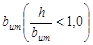
2. Конструкции тела плотины могут сочетаться с различными конструкциями противофильтрационных устройств в ее основании; выбор зависит от геологии основания и обосновывается расчетами и технико-экономическим сопоставлением вариантов. Возможно сопряжение тела плотины с основанием без противофильтрационных устройств.
Черт 1. Виды земляных насыпных плотин
а-ж - см. табл. 3; 1 - тело плотины; 2 - поверхность депрессии; 3 - дренаж; 4 - крепление откосов; 5 - верховая грунтовая противофильтрационная призма; 6 - диафрагма; 7 - верховая призма; 8 - низовая призма; 9 - переходный слой; 10 - экран из негрунтовых материалов; 11 - грунтовое ядро; 12 - центральная грунтовая противофильтрационная призма; 13 - шпунт или стенка; 14 - понур; 15 - инъекционная (цементационная) завеса (висячая); 16 - зуб; 17 - грунтовый экран; h - высота плотины; b - ширина плотины понизу; bum - ширина противофильтрационного устройства понизу; bup - ширина плотины по гребню; mh - коэффициент верхового откоса; mt - коэффициент низового откоса
В северной строительно-климатической зоне земляные насыпные плотины в зависимости от температурного состояния грунтов, конструкции тела и противофильтрационных устройств подразделяют на основные типы и виды, указанные в табл. 3.1 и на черт. 1.1.
Таблица 3.1
|
Элементы плотины |
Вид плотины |
|
|
Земляная насыпная талая |
Тело плотины |
Однородная (черт. 1.1, а) |
|
С грунтовым экраном (черт. 1.1, б) |
||
|
С ядром (черт. 1.1, в) |
||
|
С центральной призмой (черт. 1.1, г) |
||
|
С диафрагмой (черт. 1.1, д) |
||
|
С экраном из негрунтовых материалов (черт. 1.1, е) |
||
|
Противофильтрационное устройство в основании плотины |
С зубом (черт. 1.1, б, в, е) |
|
|
С инъекционной (цементационной) завесой (черт. 1.1, е) |
||
|
Со стенкой, шпунтом (черт. 1.1, д) |
||
|
Земляная насыпная мерзлая |
Тело плотины |
Однородная с мерзлотной завесой (черт. 1.1, ж) |
|
С ядром и с мерзлотной завесой (черт. 1.1, з) |
||
|
С центральной призмой и с мерзлотной завесой (черт. 1.1, и) |
||
|
Противофильтрационное устройство в основании плотины |
С мерзлотной завесой (черт. 1.1, ж, з, и) |
|
|
С зубом и мерзлотной завесой (черт. 1.1, з) |
Черт. 1.1. Типы и виды земляных насыпных плотин, возводимых в северной строительно-климатической зоне
а - и - см. табл. 3.1; 1 - тело плотины; 2 - поверхность депрессии; 3 - дренаж; 4 - крепление откосов; 5 - теплоизоляционный слой; 6 - диафрагма; 7 - верховая призма; 8 - низовая призма; 9 - переходный слой; 10 - экран из негрунтовых материалов; 11 - грунтовое ядро; 12 - центральная грунтовая противофильтрационная призма; 13 - шпунт или стенка; 14 - грунтовый экран; 15 - инъекционная (цементационная) завеса; 16 - зуб; 17 - цементационная галерея; 18 - замораживающая система; 19 - линия раздела талого и мерзлого грунтов; h - высота плотины; b - ширина плотины понизу; bum - ширина противофильтрационного устройства понизу; bup - ширина плотины по гребню; mh - коэффициент верхового откоса; mt - коэффициент низового откоса
2.2*. При проектировании земляных насыпных плотин на нескальном основании следует отдавать предпочтение однородным плотинам, а также плотинам с грунтовым противофильтрационным устройством (призмой, ядром, экраном).
При проектировании плотин в северной строительно-климатической зоне на нескальных основаниях, сложенных из мало- и среднесжимаемых при оттаивании мерзлых грунтов, предпочтение следует отдавать мерзлым плотинам с ядром, а на сильнольдистых основаниях - мерзлым плотинам с центральной противофильтрационной призмой.
2.3. При возведении плотин в две или несколько очередей следует, как правило, проектировать их однородными или неоднородными - с противофильтрационной верховой призмой или с экраном.
2.4*. Земляные плотины, дамбы, противофильтрационные устройства напорных сооружений в виде экранов, ядер и понуров можно возводить отсыпкой грунтов в воду.
Грунт отсыпают в воду как в искусственные прудки, так и в естественные водоемы (без постройки перемычек и организации водоотлива) с учетом глубин и скоростей течения.
2.5*. Земляные насыпные плотины можно возводить из всех видов грунтов, за исключением:
а) содержащих водорастворимые включения хлоридных солей более 5 % по массе, сульфатных или сульфатно-хлоридных более 10 % по массе;
б) содержащих не полностью разложившиеся органические вещества (например, остатки растений) более 5 % по массе или полностью разложившиеся органические вещества, находящиеся в аморфном состоянии, более 8 % по массе;
в) сильнольдистых и льдистых грунтов.
Указанные в подпунктах «а» и «б» грунты допускается применять для создания тела плотины при наличии соответствующего обоснования и при условии проведения необходимых защитных инженерных мероприятий, а также соблюдения правил охраны поверхностных вод от загрязнения сточными водами.
В северной строительно-климатической зоне допускается применение мерзлых слабольдистых грунтов при возведении земляных насыпных плотин при соответствующем обосновании.
2.6*. Для создания грунтовых противофильтрационных устройств в теле и основании плотины (экранов, ядер, понуров, зубьев) следует применять слабоводопроницаемые грунты.
При выборе этих грунтов надлежит учитывать следующее:
а) наиболее пригодными грунтами для образования противофильтрационных устройств являются глинистые с коэффициентом фильтрации k < 0,1 м/сут. и при числе пластичности Ip ³ 0,05 (при соответствующем обосновании Ip ³ 0,03);
б) допускается применять искусственную грунтовую смесь, содержащую глинистые, песчаные, дресвяные и крупнообломочные грунты. Состав грунтовой смеси следует определять по результатам исследований и проверки его в производственных условиях на опытных отсыпках и выбирать на основании технико-экономического сравнения вариантов;
в) для экранов и понуров плотин III и IV классов допускается применять торф (с учетом указаний п. 1.5*), причем необходимо предусматривать защитное покрытие из минеральных грунтов.
В северной строительно-климатической зоне допускается применение торфа в качестве материала для экранов и понуров плотин при соответствующем обосновании;
г) допускаемые величины засоленности грунтов, предназначенные к укладке в ядра и противофильтрационные призмы мерзлых плотин, следует устанавливать по результатам теплотехнических расчетов и на основании технико-экономического сравнения вариантов.
2.7*. Песчаные грунты (мелкозернистые, средней крупности и крупные) следует применять для однородных плотин и плотин с центральной или верховой противофильтрационной призмой, если обеспечивается фильтрационная прочность грунтов плотины, а величина фильтрационного расхода воды через ее тело допустима по результатам водохозяйственных и энергоэкономических расчетов.
2.8*. Песчаные и крупнообломочные грунты при необходимой прочности, морозостойкости и водостойкости и при обеспечении сопряжения с противофильтрационным устройством и основанием допускается применять без ограничений для призм земляных насыпных плотин. Возможность укладки этих грунтов в тело плотины определяется фильтрационным, термовлажностным и напряженным состоянием плотины.
2.9. Крутизну откосов плотины надлежит назначать исходя из условия их устойчивости с учетом:
а) физико-механических характеристик грунтов откосов и основания;
б) действующих на откосы сил: собственного веса, влияния воды (взвешивания, фильтрационных сил, капиллярного давления), сейсмических, динамических, внешних нагрузок на гребне и откосах и др.;
в) высоты плотины;
г) производства работ по возведению плотины и условий ее эксплуатации.
При предварительном назначении крутизны откосов допускается пользоваться аналогичными данными построенных сооружений с последующей проверкой расчетом устойчивости откосов.
При наличии на верховом откосе плотины экрана, образованного материалом, имеющим более низкие значения j и с по сравнению с соответствующими характеристиками грунтов тела плотины, крутизну верхового откоса следует назначать с учетом не только возможности обрушения откоса в целом, но и сдвига экрана по контакту с телом плотины, а также сдвига защитного слоя по поверхности экрана.
2.10. На откосах плотин, как правило, следует предусматривать устройство берм, определяя их число в зависимости от высоты плотины, условий производства работ, типов крепления откоса и его общей устойчивости.
Бермы следует предусматривать на верховом откосе у нижней границы его крепления для создания необходимого упора, на низовом откосе - для служебных проездов, сбора и отвода атмосферных вод, размещения контрольно-измерительной аппаратуры (КИА).
Устройство берм не должно вести к уположению откоса, определенного расчетом.
2.11. Ширину гребня плотины следует устанавливать в зависимости от условий производства работ и эксплуатации (использования гребня для проезда, прохода и других целей), но не менее 4,5 м.
Ширину гребня плотины в местах сопряжения с другими сооружениями или с берегами следует устанавливать в соответствии с конструкцией сопряжения и необходимостью создания площадок.
2.12*. Отметку гребня плотины следует назначать на основе расчета возвышения его над расчетным уровнем воды.
Возвышение гребня плотины надлежит определять для двух случаев стояния уровня воды в верхнем бьефе:
а) при нормальном подпорном уровне (НПУ) или при более высоком уровне, соответствующем пропуску максимального паводка, входящего в основное сочетание нагрузок и воздействий;
б) при форсированном подпорном уровне (ФПУ), при пропуске максимального паводка, относимого к особым сочетаниям нагрузок и воздействий. Возвышение гребня плотины hs, в обоих случаях определяется по формуле
hs = Dhset + hrun1% + a, (1)
где Dhset - ветровой нагон воды в верхнем бьефе;
hrun 1% - высота наката ветровых волн обеспеченностью 1 %;
а - запас возвышения гребня плотины.
При определении первых двух слагаемых формулы (1) следует принимать обеспеченности скорости ветра для расчета элементов волн, наката и нагона при основном сочетании нагрузок и воздействий (при НПУ) по СНиП 2.06.04-82*, при особом сочетании нагрузок и воздействий (при ФПУ) эти обеспеченности следует принимать для сооружений I - II классов 20 %, для III класса - 30 %, для IV класса - 50 %. Запас а для всех классов плотин следует принимать не менее 0,5 м.
Из двух полученных результатов расчета выбирают более высокую отметку гребня.
При возведении плотины в сейсмических районах отметку гребня следует назначать с учетом высоты гравитационной волны, возникающей в водохранилище в случае образования в нем сейсмотектонических деформаций при землетрясении, определяемой в соответствии с требованиями СНиП II-7-81*.
Отметку гребня плотины проектируют с учетом строительного подъема, назначаемого сверх определенного по п.2.12* возвышения hs. Величину строительного подъема определяют по прогнозируемой осадке гребня согласно пп. 5.16* и 5.17*.
2.13. При наличии на гребне плотины сплошного парапета, рассчитанного на воздействие волн, возвышение его верха над уровнем верхнего бьефа надлежит принимать не ниже значений, полученных, по формуле (1). Возвышение гребня плотины в этом случае назначают на 0,3 м над НПУ или на отметке ФПУ, причем принимают высшую из них.
2.14*. При расположении автодороги на гребне плотины ограждения и направляющие устройства следует выполнять в соответствии с требованиями ГОСТ 23457-86.
2.15. В случае если гребень плотины или ее откосы сложены из глинистых грунтов, следует предусматривать их защиту от сезонного промерзания слоем песчаного, гравийного или щебенистого грунта. Толщину защитного слоя следует назначать в соответствии с теплотехническими расчетами. При соответствующем обосновании допускается не предусматривать устройство защитного слоя.
2.16. Откосы земляных насыпных плотин следует защищать специальными креплениями, рассчитанными на воздействие волн, льда, течений воды, изменения уровня воды, атмосферных осадков, ветра и прочих климатических и других разрушающих откос факторов (проникновения землеройных животных, пучения глинистого грунта в зимний период и др.).
2.17. Для защиты верхового откоса, как правило, следует применять следующие виды креплений:
а) каменные (насыпные);
б) бетонные монолитные, железобетонные сборные и монолитные с обычной и предварительно напряженной арматурой;
в) асфальтобетонные;
г) биологические.
При наличии данных, обоснованных исследованиями или опытом строительства и эксплуатации плотин, допускается применять и другие виды креплений верховых откосов, например, гравийно-галечниковые, грунтоцементные и др.
2.18. Вид крепления следует устанавливать исходя из технико-экономической оценки вариантов с учетом максимального использования средств механизации и местных материалов, характера грунта тела плотины и основания, агрессивности воды, долговечности крепления в условиях эксплуатации, архитектурных требований.
2.19. Крепление верхового откоса плотины делится на основное, расположенное в зоне максимальных волновых и ледовых воздействий, возникающих в эксплуатационный период, и облегченное - ниже основного крепления.
Верхней границей основного крепления, как правило, следует считать отметку гребня плотины.
В случае значительного возвышения гребня над расчетным уровнем воды основное крепление следует заканчивать ниже гребня на отметке высоты наката hrun; далее до гребня доводят облегченное крепление.
2.20. Нижнюю границу основного крепления следует назначать, считая от минимального уровня сработки водохранилища на глубине
h = 2h1%. (2)
При этом нижняя граница основного крепления должна быть ниже минимального уровня сработки водохранилища не менее чем на 1,5t, где t - расчетная толщина ледяного покрова.
Примечание. Облегченное крепление должно защищать откос от повреждений при воздействии льда, волн и течений не только в процессе нормальной эксплуатации сооружений, но и в периоды наполнения и опорожнения водохранилища. Облегченное крепление должно сопрягаться с основанием плотины или с бермой, например, устройством упора из камня или бетона. В случае устройства крепления дна перед сооружением крепление откоса плотины должно быть сопряжено с ним.
2.21. При сопряжении основного и облегченного креплений необходимо предусматривать конструктивные меры, например, устройство в виде упора из камня или бетона. Размеры упора следует назначать в зависимости от крутизны откоса, а также коэффициента трения крепления и упора по грунту откоса.
2.22. Для крепления откосов каменной наброской следует применять, как правило, несортированный камень (горную массу).
2.23*. Необходимые массу и размеры отдельных камней в наброске крепления откосов, число камней размером менее расчетного, а также толщину наброски следует определять расчетом в соответствии с требованиями СНиП 2.06.04-82*.
2.24. Толщину каменной наброски следует принимать с учетом возможности частичного выноса мелких частиц из наброски при волновом воздействии, подвижки крупных камней, уплотнения материала крепления, а также опыта эксплуатации аналогичных креплений, но не менее 3ds,85, где ds,85 - диаметр камня, масса которого вместе с массой более мелких фракций составляет 85 % массы всей каменной наброски крепления.
2.25. Каменные материалы для крепления откосов следует применять из изверженных, осадочных и метаморфических пород, обладающих необходимой прочностью, морозостойкостью и водостойкостью.
2.26. Монолитные железобетонные крепления откосов следует проектировать, как правило, в виде секций размером не более 45´45 м каждая, разделенных между собой температурными поперечными и осадочными продольными швами. Секции крепления следует проектировать состоящими из отдельных плит.
Плиты, как правило, следует принимать прямоугольной
формы с соотношением сторон 1 £ 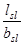
2.27. Крепление откосов из сборных железобетонных плит следует проектировать с омоноличиванием их в секции. При соответствующем обосновании допускается крепление из неомоноличенных плит с открытыми швами.
Максимальный размер плит следует устанавливать исходя из условий транспортирования и удобства укладки их на откос.
2.28*. Толщину монолитных и сборных железобетонных креплений следует определять расчетом в соответствии с требованиями СНиП 2.06.04-82*, а также при соответствующем обосновании - по имеющимся аналогам.
2.29. При пологих откосах плотин (1:7 - 1:12) и высоте волны не более 1 м может быть применено облегченное крепление в виде слоя крупнообломочного грунта, крупность частиц и толщину которого следует определять расчетом или исследованиями.
2.30*. Крепление низового откоса следует выбирать в зависимости от материала, из которого возведена низовая призма плотины, с целью защиты его от атмосферных воздействий и разрушения землеройными животными. Для крепления низового откоса из песчаных или глинистых грунтов следует, как правило, применять посев трав по растительному слою толщиной 0,2-0,3 м, отсыпку щебня или гравия слоем толщиной 0,2 м и другие виды облегченных покрытий.
В северной строительно-климатической зоне толщину слоя крепления низового откоса плотины, отсыпаемого из щебня или гравия, следует принимать в соответствии с теплотехническими расчетами.
2.31. Если низовой откос подвержен воздействию льда и волн со стороны нижнего бьефа, его крепление следует рассчитывать так же, как и для верхового откоса.
2.32. Обратные фильтры под креплением откосов, выполненным в виде каменной наброски, плит с открытыми швами или со сквозными отверстиями и т.п., могут состоять из одного слоя разнозернистого материала или двух слоев материалов с различными по крупности частицами, а также из искусственных водопроницаемых материалов (стекловолокна, минеральной ваты и др.).
2.33. Материал для обратного фильтра, число слоев и их толщину выбирают в зависимости от вида грунта откоса, наличия и состава местного материала и результатов технико-экономического сравнения вариантов.
2.34. Под обратными фильтрами на откосах из глинистых, мелкозернистых песчаных или разжижающихся при динамических нагрузках грунтов следует укладывать песчаную пригрузку, зерновой состав и толщину которой устанавливают на основании данных исследований и расчетов.
2.35. Под креплениями из монолитных или сборных железобетонных плит (с уплотненными швами или замоноличенных в секции) на откосах из песчаных или глинистых грунтов следует, как правило, укладывать однослойный обратный фильтр.
2.36. Допускается применение монолитных железобетонных бесфильтровых креплений при соблюдении условий, обеспечивающих надежную работу конструкции.
2.37. Крутизну неукрепленного волноустойчивого грунтового откоса следует принимать в соответствии с расчетным волновым воздействием. При этом очертание откосов должно быть принято с учетом «профиля динамического равновесия». применение неукрепленных откосов должно быть обосновано исследованиями и технико-экономическим сопоставлением с вариантами укрепленных откосов.
2.38*. Противофильтрационные устройства следует выполнять из слабоводопроницаемых грунтов (глинистых и мелкозернистых песчаных, глинобетона, а также торфа) или негрунтовых материалов (бетона, железобетона, полимерных, битумных материалов и др.) в виде верховой или центральной противофильтрационной призмы, экрана, диафрагмы, ядра, понура, шпунта, стенки, в том числе и создаваемой методом «стена в грунте», цементационной и других завес, а при соответствующем обосновании - в виде комбинированной конструкции из грунтовых и негрунтовых материалов.
Водонепроницаемость грунтовых противофильтрационных устройств мерзлых плотин (ядер, центральных призм) следует обеспечивать устройством в них мерзлотных завес, смыкающихся, в частности, с вечномерзлыми грунтами основания.
2.39. Противофильтрационные устройства следует выбирать в зависимости от вида земляной плотины, характеристик грунтов ее тела и основания, наличия необходимых грунтовых или негрунтовых материалов для противофильтрационных устройств, высоты плотины, положения водоупора основания и условий производства работ, от результатов технико-экономического сопоставления вариантов.
2.40*. Толщину грунтового экрана или ядра плотины следует увеличивать сверху вниз.
Минимальную толщину экрана или ядра поверху назначают из условий производства работ, но не менее 0,8 м, а понизу - такую, чтобы градиенты напора фильтрационного потока, принимаемые для глинобетона, глины и суглинка, удовлетворяли критерию фильтрационной прочности (п. 5.5*).
Участки ядра или экрана, а также понура, на которых возможны их промерзание и размыв вследствие значительных скоростей течения воды (например, при подходе к донному водоспуску), следует покрывать защитным слоем.
2.41*. Гребень грунтового экрана (после окончательной осадки плотины) должен быть выше форсированного уровня воды в верхнем бьефе с учетом высоты волны и нагона уровня воды (п. 2.12*).
Гребень ядра должен быть выше форсированного подпорного уровня воды с учетом нагона, но без учета наката волны (п. 2.12*).
2.42*. При глубоком залегании водоупора следует при экране (ядре) предусматривать устройство понура или завесы. Понур, как правило, следует выполнять из того же материала, что и экран (ядро).
Длину понура следует назначать в зависимости от допустимых фильтрационных расходов, а также по условию недопущения опасных фильтрационных деформаций грунта основания плотины.
Толщину понура следует принимать исходя из условий обеспечения его фильтрационной прочности (п. 5.5*). Наименьшую конструктивную толщину грунтового понура принимают не менее 0,5 м.
В случае если под экраном расположен крупнозернистый грунт тела плотины, между экраном и этим грунтом следует укладывать обратный фильтр (то же при проектировании понура на крупнозернистом грунте основания).
2.43*. При отсутствии на месте строительства плотины грунтов, пригодных для противофильтрационного устройства, или при неблагоприятных климатических условиях необходимо предусматривать негрунтовые противофильтрационные устройства из асфальтобетона, железобетона, полимерных материалов или инъекционную диафрагму.
2.44*. Асфальтобетонные экраны следует выполнять из гидротехнического асфальтобетона или полимерасфальтобетона с заданными по условиям строительства и работы конструкции показателями его физико-механических свойств. Свойства асфальтобетона для строительства экранов следует назначать из условия устойчивости его на откосе, трещиностойкости при отрицательных температурах воздуха, усталостной прочности и жесткости при волновых нагрузках.
Применение асфальтобетонных экранов при температурных воздействиях ниже минус 50 °С не допускается.
Толщину асфальтобетонного экрана и его конструкцию следует устанавливать из условия сохранения его сплошности и прочности при волновых, ледовых и температурных воздействиях. Подготовку под экран выполняют по принципу переходного слоя. Его конструкция должна исключать появление противодавления под экраном.
2.45*. Асфальтобетонные диафрагмы выполняют из литого, пластичного и уплотняемого горячего асфальтобетона. Тип и состав асфальтобетона для строительства диафрагмы следует выбирать исходя из прочностных свойств материала, технологических и экономических расчетов.
Применение асфальтобетонных диафрагм при температурных воздействиях ниже минус 50 °С не допускается.
Основным требованием к конструкции диафрагмы является обеспечение ее работы в сжатом состоянии совместно с грунтом тела плотины. При этом напряжения и деформации в диафрагме не должны превышать расчетных значений выбранного для данной диафрагмы состава асфальтобетона.
Состав грунта переходных слоев следует проектировать из условия недопустимости проникания в его поры асфальтобетона диафрагмы и его непросыпаемости в поры грунта тела плотины.
Конструкция примыканий асфальтобетонной диафрагмы к основанию и к бетонным сооружениям должна обеспечивать возможность скольжения диафрагмы по поверхности примыканий. Асфальтовый материал в зоне примыкания должен при этом работать в сжатом состоянии.
2.46. Толщина асфальтобетонной диафрагмы назначается по расчету из условия сохранения ее сплошности и несущей способности в строительный и эксплуатационный периоды. Предварительно ее толщина задается по формуле t = а + 0,008Н, где Н - напор в рассматриваемом сечении диафрагмы, а = 0,4 - 0,5 м.
Асфальтобетонные диафрагмы следует, как правило, применять при больших деформациях тела плотины.
2.47*. Железобетонные экраны в земляных насыпных плотинах следует применять при соответствующем технико-экономическом обосновании. Основные требования к проектированию железобетонных экранов изложены в пп. 4.25, 4.26, 4.27, 4.28*.
2.48*. Бетонные и железобетонные (сборные и монолитные) диафрагмы следует проектировать в соответствии с требованиями СНиП 2.06.08-87. Диафрагмы следует разрезать вертикальными и горизонтальными швами с соответствующими уплотнениями, допускающими температурно-осадочные деформации.
2.49*. При использовании полимерных материалов (например, полиэтиленовой, поливинилхлоридной, бутилкаучуковой пленок и др.) для создания противофильтрационных устройств конструкция этих устройств и технология строительства должны обеспечивать защиту их от солнечной радиации и механических повреждений.
В зависимости от величины допускаемых фильтрационных потерь и материала соединение полимерных элементов между собой может быть сварным, клеевым или механическим в виде нахлеста.
Толщину противофильтрационного устройства из полимерного материала следует назначать расчетом исходя из следующих условий:
величина максимальных растягивающих напряжений в материале не должна превышать величины допускаемого растягивающего напряжения, определяемого требуемой долговечностью;
зерновой состав контактирующего грунта должен обеспечивать неповреждаемость полимерного материала. В виде исключения, при соответствующем обосновании, допускается снижение требования к неповреждаемости, что должно быть обосновано экспериментальными исследованиями общей и местной фильтрационной надежности сооружения. Противофильтрационные конструкции из полимерных материалов допускается применять для плотин III и IV классов, а также при надлежащем обосновании, для плотин I и II классов высотой до 60 м.
2.50. Инъекционную диафрагму в плотине следует создавать путем нагнетания в поры грунта тела плотины специального уплотняющего раствора различного состава и консистенции.
Состав и технологию нагнетания инъекционных растворов обосновывают соответствующими исследованиями, а при необходимости - опытными работами.
Толщину инъекционной диафрагмы в основании следует принимать не менее 1/10 напора на плотину.
Инъекционная диафрагма должна обладать необходимой фильтрационной прочностью, обеспечивающей долговечность плотины.
2.51. Устройство дренажа тела земляной плотины следует проектировать с целью:
а) организованного отвода воды, фильтрующейся через тело и основание плотины в нижний бьеф;
б) предотвращения выхода фильтрационного потока на низовой откос и в зону, подверженную промерзанию;
в) экономически обоснованного снижения депрессионной поверхности для повышения устойчивости низового откоса (внутренний дренаж),
г) повышения устойчивости верхового откоса при быстрой сработке водохранилища, а также для снятия порового давления, возникающего при сейсмических воздействиях;
д) отвода воды, профильтровавшейся через экран, ядро. В случае слабоводопроницаемого материала низовой призмы плотины и наличия низовой переходной зоны отвод воды следует осуществлять специальным дренажным слоем на поверхности основания, соединенным с дренажем низовой призмы плотины.
В высоких плотинах, выполняемых из суглинистого или супесчаного грунта, для ускорения консолидации и устранения влияния порового давления может быть предусмотрено устройство горизонтальных или вертикальных дрен в толще низовой и центральной частей тела плотины.
2.52*. При проектировании дренажных устройств необходимо учитывать физические характеристики грунтов тела и основания плотины, их суффозионность и условия фильтрации в области дренажа.
Размеры дренажных устройств следует определять для каждого конкретного случая исходя из фильтрационных условий, исключающих кольматаж грунта в области дренажа.
Конструкции дренажных устройств низовой части плотины представлены на черт. 2.
Черт. 2. Схемы основных видов дренажа
в русле: а - дренажный банкет; б - наслонный дренаж. На берегу: в - трубчатый дренаж; г - горизонтальный дренаж; д-ж - комбинированные дренажи; 1 - дренажный банкет; 2 - поверхность депрессии; 3 - обратный фильтр; 4 - наслонный дренаж; 5 -труба; 6 - дренажная лента; 7 - отводящая труба; 8 - отводящая канава; df - максимальная глубина промерзания; mt - коэффициент низового откоса: bb - ширина банкета поверху
Дренаж талой плотины, возводимой в северной строительно-климатической зоне, следует располагать в непромерзающей части профиля плотины (черт. 1.1, а).
2.53. Для устройства обратного фильтра дренажа должны применяться несвязные естественные или получаемые дроблением грунты, а также искусственные пористые материалы - пористый бетон и др. (п. 2.71).
Дренажный коллектор следует проектировать из камня, бетонных, железобетонных, асбестоцементных, гончарных труб и др. с учетом агрессивности воды.
2.54*. Дренажный банкет (черт. 2, а) следует выполнять, как правило, на русловых участках плотины при ее возведении без перемычек и при перекрытии реки отсыпкой камня в воду.
Превышение гребня дренажного банкета hs (при отсутствии наслонного дренажа) над максимальным уровнем нижнего бьефа (черт. 2, а, б) следует определять с запасом на волнение, величину которого устанавливают в соответствии с п. 2.12*, но не менее 0,5 м. Ширину банкета поверху назначают из условий производства работ, но не менее 1 м.
При сопряжении тела плотины с дренажным банкетом должна быть обеспечена фильтрационная прочность сопряжения за счет устройства обратного фильтра по внутреннему откосу банкета. При наличии в основании мелкозернистого грунта и больших выходных градиентов напора под дренажным банкетом надлежит предусматривать горизонтальный обратный фильтр. Гребень дренажного банкета следует защищать от засорения поверхностными стоками.
2.55*. Наслонный дренаж (черт. 2, б) следует выполнять на участках плотины, перекрывающих затопляемую пойму, а также при отсутствии на месте строительства достаточного количества камня.
Толщину наслонного дренажа с обратным фильтром следует назначать из условий производства работ, но не менее величины
t = 5ds,85 + tf, (3)
где ds,85 - диаметр частиц, масса которых вместе с массой более мелких фракций составляет 85 % массы грунта всего дренажного слоя; tf - толщина обратного фильтра.
Материал наслонного дренажа должен сопрягаться с материалом обратного фильтра и защищать низовой откос от волнового воздействия в нижнем бьефе, а в некоторых случаях - и от промерзания.
Превышение гребня наслонного дренажа hs над максимальным уровнем нижнего бьефа следует принимать, как и для дренажного банкета (п. 2.54*), с учетом высоты выклинивания фильтрационного потока на низовой откос плотины и глубины промерзания.
2.56. Трубчатый дренаж (черт. 2, в) следует применять, как правило, на тех участках плотины, где в период ее эксплуатации вода в нижнем бьефе отсутствует или присутствует кратковременно.
Трубчатый дренаж следует предусматривать из бетонных или асбестоцементных труб (перфорированных) с заделанными или незаделанными стыками, с обсыпкой обратным фильтром.
Сечение дренажных труб следует определять гидравлическими расчетами. Диаметр дренажной трубы следует принимать не менее 200 мм.
По длине трубчатого дренажа необходимо предусматривать смотровые колодцы, располагаемые с учетом рельефа местности и требуемых уклонов.
2.57. Горизонтальный дренаж (черт. 2, г) следует проектировать в виде сплошного дренажного слоя или отдельных горизонтальных поперечных или продольных дренажных лент, выполняемых из крупнозернистого материала и защищаемых обратным фильтром.
2.58. Комбинированный дренаж (черт. 2, д - ж) представляет собой одну из возможных комбинаций дренажей, указанных в пп. 2.54* - 2.57. Отметку гребня банкета комбинированного дренажа (см. черт. 2, д) следует назначать с учетом условий перекрытия русла реки.
2.59. Размеры дренажных устройств в виде плоских дренажей или дренажных лент следует определять гидравлическими и фильтрационными расчетами с учетом условий выполнения дренажа.
2.60*. Вид дренажных устройств может меняться на различных участках плотины, и их конструкцию следует выбирать на основании технико-экономического сравнения вариантов в зависимости от:
а) вида плотин, инженерно-геологических и гидрогеологических условий основания и берегов;
б) физико-механических характеристик грунтов для дренажей;
в) условий производства работ;
г) климатических условий района строительства;
д) условий эксплуатации и температурного режима сооружения;
е) степени агрессивности воды.
2.61. Дренажи тела плотины, как правило, не устраивают в следующих случаях:
а) при возведении плотин на водопроницаемом основании, в которых депрессионная поверхность без устройства дренажа оказывается достаточно удаленной от поверхности низового откоса и не попадает в зону промерзания;
б) в низовой части плотин с экранами, ядрами и диафрагмами при условии обеспечения отвода профильтровавшейся воды;
в) в плотинах, низовая часть которых выполнена из каменной наброски или из другого крупнообломочного материала (гравийного, галечникового и т. п.).
2.62. В случае, если земляная плотина сопрягается с бетонной, дренажи их должны быть увязаны между собой.
2.63. В местах примыкания плотины к береговым участкам, расположенным выше уровня нижнего бьефа в межень, должен быть предусмотрен организованный отвод воды, профильтровавшейся через плотину (например, горизонтальный дренаж).
2.64. При строительстве земляных насыпных плотин на водонасыщенных грунтах, в которых под нагрузкой возникает поровое давление, которое нарушает прочность основания и не может быть уменьшено за счет снижения интенсивности возведения плотины, поверхность основания в пределах низкой части плотины следует покрывать горизонтальным дренажем, а для отвода воды, отжимаемой из грунта основания, рекомендуется дополнительно устраивать вертикальные дрены. Необходимость и размеры такого дренажа и расстояние между вертикальными дренами должны быть обоснованы расчетом консолидации основания с учетом интенсивности возведения плотины.
2.65*. Устойчивость верхнего слоя грунта основания в нижнем бьефе следует оценивать расчетом на выпор от действия восходящего фильтрационного потока, если этот слой имеет водопроницаемость меньшую, чем нижележащий грунт.
При недостаточной устойчивости слоя грунта подошвы низового откоса плотины надлежит устраивать вертикальный дренаж, прорезающий этот слой и снижающий противодавление.
Вместо вертикального дренажа, при соответствующем обосновании, следует предусматривать пригрузку основания за низовым откосом плотины с устройством при необходимости обратного фильтра.
2.66. Обратные фильтры надлежит предусматривать на контакте дренажа (или пригрузки) и дренируемого тела плотины, ядра, экрана или основания плотины.
Материалы обратного фильтра следует подбирать из условия обеспечения фильтрационной прочности сопрягающихся грунтов в месте контакта в процессе возведения и в период эксплуатации плотин.
Обратные фильтры допускается не устраивать при специальном обосновании; в частности, устройство такого фильтра по контакту с дренажем необязательно, если дренируемое тело сложено гравелистыми песками, гравийными грунтами и т.п.
2.67. Зерновой состав материала обратного фильтра должен быть подобран с учетом физических характеристик дренируемого грунта и имеющихся местных фильтровых материалов. Состав фильтра должен исключать:
а) отслаивание глинистого грунта на контакте с материалом фильтра - для плотин из глинистого грунта или плотин на глинистом основании;
б) проникание (просыпание) частиц защищаемого грунта в поры фильтра на участках нисходящего фильтрационного потока - для плотин из песчаного грунта;
в) выпор и вдавливание частиц грунта в поры фильтра - для песчаного основания на участках восходящего потока;
г) размыв защищаемого грунта на границе с фильтром - в случае фильтрационного потока, направленного вдоль контакта (контактный размыв);
д) кольматаж фильтра мелкими частицами, выносимыми фильтрационным потоком из защищаемого грунта, вынос которых допускается в проекте;
е) опасную для прочности фильтра суффозию в самом слое фильтра.
Состав фильтра должен обеспечивать «самозалечивание» трещин в ядре в случае их образования.
Для плоти III и IV классов и временных сооружений допускается отслаивание связного грунта в порах фильтра на глубину, не влияющую на его прочность (на 0,5 d0,max, где d0,max - максимальный диаметр пор фильтра).
2.68. Число слоев обратного фильтра и их состав следует определять на основании технико-экономического сравнения вариантов, при этом необходимо стремиться к назначению возможно меньшего числа слоев фильтра.
2.69. Материал обратного фильтра дренажей для плотин I и II классов следует проверять экспериментальным путем на грунтах и в условиях работы, в которых он будет находиться в сооружении, а для плотин III и IV классов - согласно соответствующим расчетам.
2.70. Толщина каждого слоя обратного фильтра по фильтрационным условиям должна быть не менее 5 ds,85, но не менее 0,2 м.
Толщину слоев обратных фильтров необходимо назначать с учетом производства работ и технико-экономических расчетов.
2.71. Для устройства обратных фильтров следует применять естественные несвязные или получаемые дроблением грунты из твердых морозостойких каменных пород, не содержащие водорастворимых солей, и гранулированные шлаки (предварительно исследованные в лаборатории).
2.72*. Для предотвращения опасной фильтрации по контакту земляной плотины с ее основанием следует предусматривать меры, зависящие от характера и состояния грунтов основания и обеспечивающие плотное примыкание грунта тела плотины к грунту основания.
В проектах плотин, возводимых на нескальном основании, следует предусматривать мероприятия по подготовке основания, в том числе по вырубке леса и кустарника, выкорчевыванию пней, удалению растительного слоя и слоя, пронизанного корневищами деревьев и кустов или ходами землеройных животных, а также по удалению грунта, содержащего значительное количество органических включений или солей, легко растворимых в воде (пп. 1.5* и 2.5*), удалению сильнольдистых грунтов по всей площади основания талой плотины или только под верховым клином мерзлой плотины, и в случае необходимости - мероприятия по созданию противофильтрационного устройства в основании плотин (зуба, стенки, шпунта, мерзлотной завесы и т.п.). При проектировании мерзлых плотин допускается не предусматривать удаление растительного слоя в пределах низовой упорной призмы плотины.
При сопряжении талой плотины с вечномерзлыми грунтами береговых примыканий противофильтрационное устройство плотины следует заводить в берега на глубину зоны оттаивания грунтов береговых массивов при эксплуатации плотины, определяемую теплотехническим расчетом.
При проектировании плотин распластанного профиля частичный или полный отказ от мероприятий по подготовке основания допускается при соответствующем обосновании согласно требованиям п. 3.3*.
При проектировании земляных плотин, возводимых на скальном основании, должно быть предусмотрено удаление разрушенной скалы (в том числе должны быть удалены отдельные крупные камни и скопления камней) на площади сопряжения противофильтрационных устройств плотины с основанием, заделаны разведочно-геологические и строительные выработки.
На участках сопряжения с основанием частей профиля плотины, выполняемых из более водопроницаемых материалов, чем противофильтрационные устройства, удаление разрушенной скалы необязательно.
При наличии в основании поверхностного слоя грунта, имеющего более низкие прочностные характеристики, чем грунт плотины, необходимо определять экономическую целесообразность удаления этого слоя (или его верхней части), учитывая, что при этом откосы плотины могут быть более крутыми.
Строительство плотин в сейсмических районах на основаниях, сложенных из грунтов, способных разжижаться при динамических воздействиях, требует специальных технико-экономических обоснований.
2.73*. Наклонные поверхности берегов в пределах профиля примыкания плотины должны быть соответственно спланированы, при этом не допускаются нависающие участки в пределах примыкания плотины и уступообразные участки в пределах примыкания противофильтрационного устройства плотины.
При наличии в основании плотин быстровыветривающихся пород в проектах плотин из грунтовых материалов необходимо учитывать изменения свойств этих пород или предусматривать соответствующие конструктивно-технологические мероприятия.
При наличии в скальном основании местных сквозных тектонических нарушений в виде трещин надлежит принимать меры к их расчистке и заделке, а также меры, обеспечивающие фильтрационную прочность материала, заполняющего эти трещины.
2.74*. Для земляных плотин с противофильтрационными устройствами и однородных земляных плотин, выполняемых из глинистых грунтов на сильнофильтрующих (в том числе после оттаивания) аллювиальных отложениях, прикрывающих скальные породы основания, при небольшой (до 5 м) мощности слоя аллювия, как правило, следует доводить противофильтрационные устройства до скалы врезкой зуба.
При мощности аллювиального слоя более 5 м следует сравнивать варианты плотин с ядром и противофильтрационной преградой (цементационной завесой, бетонной стенкой и др.) с плотинами с экраном и понуром.
Проектом необходимо предусматривать сопряжение противофильтрационных устройств плотины с основанием в месте примыкания зуба к скале (например, путем инъекции раствора в месте примыкания, а в случае необходимости - устройства противофильтрационной завесы, в том числе и мерзлотной завесы в основании мерзлой плотины).
Глубину висячей противофильтрационной преграды и длину понура следует устанавливать на основании фильтрационных расчетов.
2.75. При сопряжении противофильтрационных устройств плотины с наклонными неровными поверхностями скальных берегов следует предусматривать подготовку поверхности скалы от гребня плотины (ядра, экрана) к основанию с постепенным уположением, без резких переломов, с наименьшим технически и экономически обоснованным наклоном береговых контактов, срезку выступающих участков поверхности скалы и выравнивание бетоном местных понижений.
Угол между смежными участками поверхности скалы в сопряжении с противофильтрационными устройствами не должен превышать 20°.
Очертание продольного профиля плотины по основанию следует назначать из условия недопущения образования трещин на основе результатов расчета его напряженно-деформированного состояния.
2.76*. В земляных плотинах на сильнотрещиноватых скальных основаниях, по которым (в том числе и после оттаивания) может происходить опасная для тела плотины фильтрация, необходимо предусматривать устройство зуба и противофильтрационной завесы под ним, а также поверхностную инъекцию раствора (цементационного, глинистого или мелкопесчаного) в пределах подошвы противофильтрационного устройства плотины. Проектирование однородных плотин без противофильтрационных устройств в таких случаях должно быть обосновано.
В северной строительно-климатической зоне при проектировании мерзлых земляных плотин на сильнотрещиноватых скальных основаниях следует предусматривать устройство мерзлотной завесы в основании при необходимости с предварительным оттаиванием основания на заданную глубину и его цементацией.
2.77*. При проектировании земляных плотин на слабоводонепроницаемом (в том числе после оттаивания) и слаботрещиноватом скальном, полускальном и глинистом основаниях допускается предусматривать укладку грунта тела плотины непосредственно на основание без противофильтрационных устройств.
2.78*. В местах сопряжения тела или противофильтрационного устройства плотины с основанием, берегами и бетонными сооружениями следует предусматривать тщательную укладку и уплотнение грунта вблизи поверхности сопряжения, для чего контактный слой (толщиной 2-3 м) необходимо отсыпать из грунта более пластичного, менее водопроницаемого и более влажного (не более чем на 1-3 %), чем грунт остального тела плотины или противофильтрационного устройства.
При строительстве талых плотин в северной строительно-климатической зоне при необходимости дополнительно следует предусматривать обогрев контактного слоя грунта противофильтрационного устройства плотины с основанием.
2.79*. При проектировании в основании плотины противофильтрационных устройств (шпунтового ряда, стенки из бетона, глинистого грунта или возводимой методом «стена в грунте» инъекционной завесы, мерзлотной завесы и др.) следует предусматривать сопряжение их непосредственно с противофильтрационными устройствами тела плотины (ядром, экраном или диафрагмой).
2.80. Сопрягающие устройства земляных плотин с бетонными и железобетонными сооружениями должны обеспечивать:
а) защиту земляной плотины от размыва водой, пропускаемой через водосбросные сооружения;
б) плавный подход воды к водоприемным и водосбросным сооружениям со стороны верхнего бьефа и плавное растекание потока в нижнем бьефе, предотвращающее подмыв тела и основания плотины;
в) предотвращение опасной фильтрации в зоне примыкания.
Проекты сопрягающих устройств плотин I и II классов должны быть обоснованы данными гидравлических и фильтрационных исследований.
2.81*. Для обеспечения надежного примыкания тела земляной плотины к бетонному сооружению следует, как правило, предусматривать уклон сопрягающих граней бетонной конструкции в сторону земляной насыпи не более чем 10:1.
Сопряжение земляной плотины с бетонными сооружениями, прорезающими ее тело, следует осуществлять для плотин, имеющих противофильтрационные устройства, в зоне этих устройств, а для однородных плотин - в пределах верхового клина и центральной части плотины.
Сопряжение тела земляной плотины с бетонным сооружением надлежит предусматривать в виде заделанных в него диафрагм, врезающихся в земляную плотину (шпунтового ряда, бетонной стенки и др.). Длину диафрагм сопряжения следует устанавливать на основании фильтрационных расчетов.
В северной строительно-климатической зоне длину диафрагм сопряжения талых и мерзлых плотин с бетонными сооружениями следует устанавливать на основании фильтрационных и теплотехнических расчетов. Сопряжение тела мерзлой земляной (каменно-земляной) плотины, имеющей в своем составе сезоннодействующие охлаждающие устройства (СОУ) с бетонным сооружением (в том числе с водосбросом) следует осуществлять заведением СОУ плотины в сопрягающий устой бетонного сооружения. Установку СОУ в месте примыкания к бетонному сооружению следует предусматривать с шагом, величина которого обосновывается теплотехническим расчетом при учете теплового потока в бетоне сооружения.
Противофильтрационные устройства в основании земляных плотин и бетонных сооружений должны быть взаимоувязаны.
2.82. При сопряжении участков земляной плотины, выполняемых насыпным и намывным способами, необходимо предусматривать мероприятия, не допускающие сосредоточенную фильтрацию в месте сопряжения и неравномерную осадку тела плотины и основания.
2.83. Наращивание однородной грунтовой плотины на слабоводопроницаемом основании при реконструкции сооружения следует осуществлять как с верховой, так и с низовой сторон плотины.
Увеличение высоты плотины с диафрагмой (ядром) и завесой в основании возможно как с низовой ее стороны - путем наращивания диафрагмы экраном, так и с обеих сторон - с сохранением вертикальной диафрагмы, при этом следует определить необходимость усиления противофильтрационной завесы в основании.
Увеличение высоты плотины с экраном и противофильтрационным устройством в основании возможно только с низовой ее стороны с проверкой фильтрационной прочности экрана (из грунтовых или негрунтовых материалов) и при необходимости с усилением противофильтрационного устройства в основании.
2.84. При реконструкции плотин из грунтовых материалов необходимо предусматривать соответствующие мероприятия по обеспечению нормальной работы дренажа.
2.85. Для надежного сопряжения наращиваемой призмы с низовым откосом плотины растительный слой должен быть убран.
2.86*. Замораживание талых грунтов противофильтрационного устройства плотины и его основания, сохранение их в мерзлом состоянии при эксплуатации плотины, а также сохранение или усиление естественного мерзлого состояния грунтов основания противофильтрационного устройства и низового клина плотины при ее эксплуатации, следует выполнять с помощью СОУ воздушного, жидкостного или парожидкостного вида.
К основным видам СОУ, применяемым при строительстве мерзлых плотин из грунтовых материалов, относятся:
воздушные с принудительной циркуляцией воздуха (черт. 2.1, а);
жидкостные с естественной конвекцией теплоносителя (черт. 2.1, б);
парожидкостные (черт. 2.1, г).
Кроме основных видов СОУ могут быть применены жидкостные с принудительной циркуляцией теплоносителя (черт. 2.1, в), а также рассольные замораживающие системы с охлаждением рассола в наружном теплообменнике.
Черт. 2.1. Схемы основных видов СОУ
а - воздушное с принудительной циркуляцией воздуха; б - жидкостное с естественной конвекцией теплоносителя; в - жидкостное с принудительной циркуляцией теплоносителя; г - парожидкостное; Нgr - глубина СОУ; Нout - высота наземной части СОУ
Применение рассольных замораживающих систем на базе холодильных машин и жидкостных СОУ с принудительной циркуляцией теплоносителя допускается при надлежащем технико-экономическом обосновании.
Использование жидкого азота для замораживания грунта допускается в целях предупреждения или ликвидации аварийной ситуации при эксплуатации плотины.
2.87*. При проектировании воздушной замораживающей системы, состоящей из воздушных СОУ, объединенных подводящим или (и) отводящим коллектором, следует предусматривать:
герметизацию системы на теплый период года;
автоматическое отключение системы при снегопаде, повышении температуры наружного воздуха выше величины, установленной проектом, и включение при снижении температуры ниже проектной величины;
возможность очистки системы от льда или инея.
Работу воздушных замораживающих систем следует считать целесообразной при температуре воздуха ниже минус 12-15 °С (в первый сезон замораживания грунта).
При проектировании замораживающих систем, состоящих из автономных жидкостных или парожидкостных СОУ, необходимо предусматривать герметизацию устройств и вертикальность установки СОУ. Применение внешней трубы грунтовых теплообменников устройств диаметром более 180 мм нерационально.
2.88*. Бурение скважин, установку СОУ и устройство замораживающих систем следует производить после возведения плотины.
В случае необходимости для плотин высотой более 25 м допускается применять двухъярусное замораживание: грунтов основания из потерны и грунтов противофильтрационного устройства плотины - с гребня.
2.89*. При строительстве низконапорных плотин водохозяйственного назначения эффективным является сочетание СОУ в центральной части плотины с теплоизоляцией гребня и низового откоса. В качестве теплоизоляционного материала рекомендуется пенопласт типа ПХВ-1 толщиной 6-10 см. Теплоизоляционный слой необходимо защищать от механических повреждений грунтом толщиной 15-20 см.
3.1. Намывные плотины в зависимости от грунтов тела плотины и способов возведения подразделяют на основные виды, указанные в табл. 4 и на черт. 3 и 4.
3.2*. Конструкцию плотины следует выбирать в соответствии с указаниями п. 1.4*, при этом следует стремиться к максимальному использованию естественных грузов, не требующих сортировки при разработке карьера или выемки.
3.3*. При наличии соответствующих карьерных грунтов предпочтение следует отдавать однородным песчаным плотинам, характеризуемым высокой технологичностью производства работ.
Однородные песчаные плотины распластанного профиля со свободно формируемыми откосами следует применять при технико-экономическом обосновании в случаях залегания слабых грунтов в основании, необходимости уменьшения объема крепления откосов, а также при намыве под воду.
При проектировании плотин распластанного профиля или с уширенной нижней частью («подушкой») на слабых, обводненных, заболоченных и заторфованных грунтах основания допускается не предусматривать полностью или частично работы по удалению поверхностного слоя грунта основания и растительности при условии, что это не приведет к нарушению устойчивости и фильтрационной прочности сооружения.
При возведении однородных плотин на слабых грунтах следует, как правило, намывать уширенную нижнюю часть («подушку»), а верхнюю часть возводить после стабилизации осадок «подушки».
Таблица 4
|
Грунты тела плотины |
Способ возведения плотины |
|
|
Однородная: |
||
|
с принудительно формируемыми откосами (черт. 3, а) |
Пески, супеси, суглинки (в том числе лёссовидные) |
Двусторонний намыв с дамбами обвалования на откосах |
|
со свободно формируемыми откосами - верховым (черт. 3, б) или обоими |
Пески, гравийные (дресвяные) |
Односторонний намыв с дамбами обвалования на низовом откосе (черт. 4, в) и центральный намыв без дамб обвалования |
|
узкопрофильная (черт. 4, в) |
То же |
Пионерный намыв с выпуском пульпы из торца трубы и непрерывным устройством обвалования по откосам |
|
Неоднородная: |
||
|
с ядром (черт. 3, в) |
Гравийные (дресвяные), галечниковые (щебенистые) с содержанием песчаных и глинистых фракций |
Двусторонний намыв с дамбами обвалования на откосах и отстойным прудом в центральной части плотины (черт. 4, а) |
|
с центральной зоной (черт. 3, г) |
Гравийные (дресвяные), галечниковые (щебенистые) или песчаные разнозернистые, содержащие мелкозернистые фракции |
То же |
|
Комбинированная: |
||
|
с насыпным ядром из глинистого грунта и намывными боковыми зонами (черт. 3, д) |
Гравийные (дресвяные), галечниковые (щебенистые) или песчаные |
Двусторонний намыв без пруда |
|
с насыпными банкетами из горной массы и намывной однородной центральной зоной (черт. 3, е) |
То же |
То же |
Черт. 3. Виды намывных плотин
а-е см. табл. 4; 1 - крепление верхового откоса; 2 - дренаж; 3 - намывное ядро; 4 - намывные промежуточные зоны; 5 - намывные боковые зоны; 6 - намывная центральная слабоводопроницаемая зона; 7 - боковые насыпные призмы (банкеты); 8 - сейсмостойкое крепление откоса; 9 - насыпное глинистое ядро
Черт. 4. Основные схемы возведения намывных плотин
a - двусторонний намыв неоднородной плотины с ядром; б - односторонний намыв однородной плотины с верховым откосом, формируемым при свободном растекании пульпы; в - намыв узкопрофильной плотины; 1 - распределительный пульпопровод; 2 - откос намыва; 3 - отстойный пруд; 4 - граница ядра; 5 - дамба попутного обвалования; 6 - дамба первичного обвалования; 7 - граница прудка; 8 - водоотводящая труба; 9 - временная перемычка; 10 - водосбросный колодец
3.4. Неоднородные плотины следует проектировать при наличии соответствующих карьерных грунтов и необходимости снижения фильтрационного расхода по сравнению с однородными плотинами, а также для уменьшения объема тела плотины. При этом следует учитывать усложнение технологии производства работ по созданию ядра с заданным размером и составом грунта и недопущению его перемыва крупным грунтом.
Для обеспечения однородных свойств ядра заданного размера и исключения перемыва крупным грунтом допускается включать в проекты при соответствующем обосновании принудительное перемешивание грунта в пределах ядерной прудковой зоны плотины.
3.5*. Намывные плотины с боковыми насыпными или каменно-набросными призмами следует применять при условии использования высоких перемычек или камня из полезных выемок котлованов. При проектировании плотин для сейсмических районов необходимо предусматривать устройство каменно-набросных призм и сейсмостойкого крепления откосов.
3.6. Намывной способ возведения плотины допускается совмещать с насыпным, когда, например, верховую призму плотины намывают из песка, а низовую отсыпают из гравийно-галечникового грунта.
Намывные плотины с противофильтрационными устройствами в виде диафрагм, экранов, понуров и т.п. можно предусматривать в исключительных случаях при надлежащем обосновании.
3.7. В проекты намывных плотин следует включать мероприятия по обеспечению качества намыва грунта и установленной плотности его укладки, а также устойчивости откосов плотины в строительный период, в частности, с учетом фильтрационного потока, образующегося за счет водоотдачи свеженамытого грунта, инфильтрации с поверхности намыва и из отстойного пруда. Для намывных плотин должна быть установлена предельная интенсивность их наращивания по условию обеспечения водоотдачи намытого грунта, а для частей плотин, намываемых под воду, - пределы подводной и надводной крутизны откоса.
3.8*. Зерновой состав карьерных грунтов следует считать основной характеристикой для оценки технической возможности возведения намывных плотин и экономической целесообразности выбранной конструкции.
Содержание органических и водорастворимых примесей в грунтах для намыва плотины следует допускать в количествах, при которых их остаток в теле намывной плотины после производства работ по ее намыву будет не выше величин, указанных в п. 2.5*.
3.9. Предварительную оценку пригодности карьерного грунта для намыва плотин в зависимости от зернового состава следует производить по графикам черт. 5. Предпочтительными для намыва однородных плотин являются песчаные грунты I группы; песчаные и гравийные грунты II группы целесообразно предусматривать для неоднородных плотин с мелкопесчаной центральной зоной или глинистым ядром.
Черт. 5. Группы грунтов, используемых дли намыва плотин
Супеси (III группа), суглинки (IV группа), гравийные и галечниковые грунты (V группа), а также лёссовидные грунты можно использовать для намыва при соответствующем технико-экономическом обосновании. При этом супеси и лёссовидные суглинки следует использовать для намыва однородных плотин, а также для намыва центральной слабоводопроницаемой зоны неоднородных плотин, гравийно-галечниковые грунты - для намыва боковых зон этих плотин.
Запас грунта в карьере должен быть в 1,5-1,8 раза больше объема грунта, принятого в проекте плотины.
При выборе карьеров инженерно-геологические изыскания следует проводить с детальностью, позволяющей выделить и исключить из запасов участки грунта, не отвечающего требованиям укладки в плотину, а также не поддающегося разработке средствами гидромеханизации.
Грунт для намыва плотин должен быть проверен на содержание негабаритных включений (валунов, камней и т.п.), не проходящих через рабочие органы грунтовых насосов.
3.10. Для неоднородных плотин предпочтительны грунты с высокой степенью разнозернистости, например, гравийные с пылеватыми, глинистыми фракциями и при содержании песчаных частиц не менее 25 - 30 %. Содержание в ядре глинистых частиц размером d £ 0,005 мм допускается не более 20 % по условиям консолидации грунта; более высокое содержание глинистых частиц следует допускать при специальном обосновании.
3.11. Возможность применения для намыва искусственных смесей грунтов из разных карьеров или сортированных карьерных грунтов должна быть обоснована технико-экономическим расчетом.
3.12. При необходимости следует предусматривать дополнительное искусственное уплотнение намытого песка (глубинное гидровибрирование, уплотнение взрывами, послойное вибрационное уплотнение или укатку и др.). Мероприятия по дополнительному уплотнению намытых грунтов должны быть обоснованы, как правило, полевыми опытными работами.
3.13. Фракционирование грунта в поперечном профиле плотины в результате гидравлической раскладки следует учитывать при коэффициенте разнозернистости намываемого грунта k60,10 ³ 2,5 или k90,10 ³ 5. Раскладка грунта зависит от его зернового состава, расхода пульпы и ее консистенции, ширины пляжа намыва.
Здесь k60,10 = d60 : d10 и k90,10 = d90 : d10, где d90, d60, d10 - диаметр фракций грунта, масса которых вместе с массой более мелких фракций составляет соответственно 90, 60 и 10 % массы всего грунта.
3.14*. При определении зернового состава грунта намывных плотин необходимо учитывать отмыв и сброс мелких частиц грунта. При возведении песчаных однородных плотин следует обеспечивать сброс глинистых и частично пылеватых частиц, однако технологически неизбежен отмыв и более крупных частиц вплоть до мелких песчаных. Расчет нормы отмыва грунта допускается производить по методике, приведенной в рекомендуемом приложении 3*.
При намыве неоднородных плотин сброс глинистых частиц следует назначать с учетом требований п.3.10.
3.15. При проектировании однородных плотин зерновой состав намытого грунта следует принимать по средневзвешенному составу карьерного грунта с учетом отмыва мелких частиц при условии незначительной вариации в поперечном сечении плотины состава грунта и коэффициента фильтрации. При этом следует учитывать небольшое увеличение содержания мелких частиц, грунта в центральной части плотины при ее двустороннем намыве и в наиболее удаленной от выпуска пульпы части плотины при одностороннем намыве.
3.16. При проектировании неоднородных плотин зерновой состав грунта в отдельных их частях необходимо устанавливать с учетом фракционирования при намыве.
Фракционирование грунта при намыве определяют по аналогам или расчетом по методике, приведенной в рекомендуемом приложении 4.
Осредненный зерновой состав грунта следует определять отдельно для ядра и боковых зон плотины или для этих частей плотины и дополнительно для промежуточных зон. Разбивка профиля плотины на части принимается в соответствии с имеющимися аналогами или данными рекомендуемого приложения 4.
Для плотин I и II классов фракционирование грунта следует уточнять при проведении опытного намыва, соблюдая условия технологии возведения данной плотины.
3.17. Ширину ядра неоднородной плотины следует предварительно назначать в зависимости от состава карьерного грунта в пределах 10-20 % ширины плотины на данной высоте, а центральной зоны из мелкопесчаного грунта - а пределах 20-35 % указанной ширины. Эти размеры надлежит корректировать в соответствии с рекомендуемым приложением 4 или по результатам начального этапа намыва.
3.18. Крутизну откосов намывных плотин и вид крепления назначают в соответствии с требованиями пп.2.9-2.37, при этом крутизну откосов следует устанавливать не только с учетом конструкции и высоты плотины, характеристик грунтов ее тела и основания, но и с учетом неблагоприятного для устойчивости откосов фильтрационного режима, возникающего в процессе намыва плотины, а также отсутствия в период строительства постоянных дренажных устройств.
Предварительно средние значения крутизны откосов намывных плотин можно назначать по аналогии с построенными сооружениями в соответствии с данными табл. 5.
Таблица 5
|
Грунты основания |
Крутизна откоса |
|
|
Однородная песчаная |
Песчаные, супесчаные |
1:3,5 - 1:5 |
|
Старичные отложения, торф, ил |
1:5 - 1:8 |
|
|
Неоднородная гравийно-песчаная с ядром |
Скальные, плотные глины |
1:3 - 1:4 |
3.19. Если в результате расчета устойчивости откосов плотины в стадии ее намыва с учетом технологии производства работ получатся более пологие откосы, чем по расчету откосов в период эксплуатации плотины, крутизна должна быть принята по расчетам для строительного периода.
При необходимости выполнения более крутых откосов следует изменить технологию или применить конструктивные мероприятия, например, строительный дренаж.
3.20. Откосы намывных плотин распластанного профиля, формирующиеся при свободном растекании пульпы, допускается проектировать без крепления или с облегченным гравийным, галечниковым или биологическим креплением при обеспечении его сохранности в условиях волнового и ветрового воздействий.
На откосах таких плотин при необходимости следует предусматривать поперечные буны для предотвращения перемещения грунта течениями вдоль плотины.
3.21. Ширину гребня намывных плотин следует устанавливать в соответствии с требованиями п. 2.11.
Минимальную ширину гребня намывной части профиля плотины строительного периода следует назначать с учетом возможности работы гидротранспортной установки и используемых при укладке грунта средств механизации: для неоднородных плотин с центральной зоной - не менее 50 м, с ядром - не менее 70 м; для однородных плотин - не менее 20 м.
При необходимости возведения плотины с меньшей шириной по гребню верхнюю ее часть следует выполнять отсыпкой грунта насухо.
3.22. При проектировании дренажных устройств в теле намывной плотины следует наряду с требованиями пп.2.51-2.71 учитывать возможность одновременного ведения работ по намыву тела плотины и по устройству дренажа, отдавая предпочтение конструкциям дренажа, представленным на черт. 2, б, д, е.
Для понижения поверхности депрессии в плотине во время намыва надлежит при наличии обоснования предусматривать специальные дренажи.
3.23. Средние значения уклона откосов при свободном намыве песчаных и гравийных грунтов (при торцовом безэстакадном способе намыва с 10 %-ной консистенцией пульпы) можно ориентировочно назначать по табл. 6 с последующей корректировкой по данным начального этапа намыва.
При консистенции пульпы, отличающейся от 10 %-ной, уклон откоса i рассчитывают по формуле
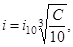
где С - консистенция пульпы, % по массе;
i10 - уклон откоса при С = 10 %.
Таблица 6
|
Уклон откоса при расходе пульпы, м3/ч |
|||
|
до 2000 |
2000-4000 |
св. 4000 |
|
|
Песок: |
|||
|
мелкий |
1:40 |
1:60 |
1:100 |
|
средний |
1:33 |
1:40 |
1:65 |
|
крупный |
1:25 |
1:33 |
1:40 |
|
гравелистый |
1:20 |
1:25 |
1:30 |
|
Гравий |
1:15 |
1:20 |
1:25 |
3.24. Уклон откоса при намыве ниже уровня воды определяют по расчету в зависимости от зернового состава грунта. Предварительно уклон откоса может быть принят от 1:10 до 1:4, причем меньшие значения уклона соответствуют мелким пескам при наличии течения воды в водоеме. С увеличением крупности грунта и снижением скорости течения уклон откоса увеличивается.
3.25. При реконструкции земляных намывных плотин повышение гребня однородной плотины может быть обеспечено за счет примыва низовой призмы к существующему откосу плотины. Примыв следует выполнять из карьерного грунта более крупного состава, чем грунт, из которого намыт основной профиль плотины. Допускается выполнять низовую призму плотины отсыпкой грунта насухо с послойной укаткой.
3.26. При повышении гребня намывной плотины с ядром кроме примыва низовой призмы необходимо предусматривать создание противофильтрационного устройства, выполненного, например, в виде экрана, сопряженного с существующим ядром.
3.27. Перед возведением низовой призмы должен быть снят растительный слой на существующем низовом откосе плотины.
До начала примыва низовой плотины должны быть реконструированы все действующие дренажные устройства.
3.28*. Намывные талые плотины для северной строительно-климатической зоны следует проектировать с учетом ежегодных сроков начала и окончания сезона намыва грунта, мероприятий по ускорению оттаивания промерзшего в холодный период грунта, при которых ко времени принятия расчетного напора тело плотины будет полностью в талом состоянии.
3.29*. Для низконапорных талых плотин из песчаного грунта, возводимых на слабых основаниях, следует предусматривать при технико-экономическом обосновании конструкции с распластанными профилями, при которых верховой откос является волноустойчивым без дополнительного крепления, а низовому откосу придается профиль, позволяющий выводить основную часть фильтрационного потока в основание плотины.
3.30*. Для однородных намывных плотин с принудительно формируемым низовым откосом должно быть предусмотрено защитное покрытие сухого откоса для предотвращения в эксплуатационный период солифлюкции, в том числе устройством пригрузок.
3.31*. В проектах талых плотин, возводимых на основаниях, сложенных льдистыми грунтами (при ii ³ 0,05), должно быть приведено обоснование допустимости осадок грунта тела плотины при оттаивании основания.
3.32*. При проектировании дренажных устройств талых намывных плотин следует учитывать возможность их попеременного замораживания и оттаивания в строительный период.
3.33*. В проекты должны быть включены мероприятия по обеспечению устойчивости откосов плотины в процессе строительства при ежегодном оттаивании поверхностного слоя грунта.
3.34*. На основаниях, сложенных льдистыми грунтами (0,4 ³ ii ³ 0,05), при соответствующем обосновании допускается строительство мерзлых плотин высотой до 10 м.
3.35*. В проектах реконструкции намывных плотин должны быть предусмотрены меры, обеспечивающие надежное качество сопряжения старой и новой частей плотины, в том числе мерзлого или талого состояния грунта плотины.
4.1*. Каменно-земляные и каменно-набросные плотины по конструкции противофильтрационных устройств и способу производства работ подразделяют на основные виды, указанные в табл. 7 и на черт. 6-8.
Таблица 7
|
Конструкция противофильтрационного устройства |
|
|
Каменно-земляная |
Грунтовый экран (черт. 6, а) |
|
Грунтовое ядро (черт. 6, б) |
|
|
Верховая грунтовая призма (черт. 6, в) |
|
|
Центральная грунтовая призма (черт. 6, г) |
|
|
Инъекционная диафрагма (в плотине, возводимой направленным взрывом, черт. 7, а) |
|
|
Экран (в плотине, возводимой направленным взрывом, черт. 7, б) |
|
|
Каменно-набросная |
Экран из негрунтовых материалов (черт. 8, а) |
|
Диафрагма (черт. 8, б) |
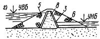
Черт. 6. Виды каменно-земляных плотин
а-г - см. табл. 7; 1 - крепление верхового откоса; 2 - грунтовый экран; 3 - переходные слои (обратные фильтры); 4 - грунтовое ядро; 5, 6 - верховая и низовая призмы; 7, 8 - верховая и центральная грунтовые противофильтрационные призмы
Черт. 7. Виды взрывонабросных плотин
а, б - см. табл. 7; 1 - контур навала; 2 - контур расчетного профиля; 3 - инъекционное ядро; 4 - инъекционная завеса; 5 - экран; 6 - понур
Черт. 8. Виды каменно-набросных плотин
а, б - см. табл. 7; 1 - тело плотины; 2 - цементационная завеса; 3 - бетонный зуб; 4 - железобетонный экран; 5 - подэкрановая кладка; 6 - верховая призма; 7 - диафрагма; 8 - переходные слои; 9 - низовая призма
В северной строительно-климатической зоне каменно-земляные и каменно-набросные плотины в зависимости от температурного состояния грунтов плотины и ее основания, конструкции тела и противофильтрационных устройств в теле и основании подразделяют на основные типы и виды, указанные в табл. 7.1 и на черт. 6; 6.1; 8.
Таблица 7.1
|
Конструкция противофильтрационного устройства |
Принцип строительства |
|
|
Каменно-земляная талая |
Грунтовый экран (черт. 6, а) |
II |
|
Грунтовое ядро (черт. 6, б) |
||
|
Центральная грунтовая призма (черт. 6, г) |
||
|
Каменно-земляная мерзлая |
Грунтовое ядро и мерзлотные завесы в ядре и основании (черт. 6.1, а) |
I |
|
Центральная грунтовая призма и мерзлотные завесы в призме и основании (черт. 6.1, б) |
||
|
Грунтовое ядро и мерзлотная завеса в ядре и мерзлотная завеса в основании, выполняемая из потерны (черт. 6.1, в) |
||
|
Каменно-набросная талая |
Экран из негрунтовых материалов (черт. 8, а) |
II |
|
Диафрагма (черт. 8, б) |
Черт. 6.1. Виды мерзлых каменно-земляных плотин в северной строительно-климатической зоне
а-в - см. табл. 7.1; 1 - переходные слои (обратные фильтры); 2 - грунтовое ядро; 3, 4 - верховая и низовая призмы; 5 - центральная грунтовая противофильтрационная призма; 6 - СОУ; 7 - естественная граница подруслового талика; 8 - цементационная галерея; 9 - линия раздела талого и мерзлого грунта; h - высота плотины; bum - ширина противофильтрационного устройства понизу
4.2*. Каменно-земляные и каменно-набросные плотины следует возводить как на скальных, так и на нескальных основаниях.
В северной строительно-климатической зоне талые каменно-земляные и каменно-набросные плотины следует возводить на скальных и нескальных основаниях, сложенных малосжимаемыми при оттаивании грунтами. На основаниях, сложенных сжимаемыми при оттаивании грунтами, разрешается проектировать мерзлые каменно-земляные плотины.
4.3. При проектировании каменно-земляных и каменно-набросных плотин наряду с требованиями разд. 1 необходимо также учитывать требования разд. 2 в части, относящейся к материалам для возведения земляных насыпных плотин, проектирования откосов и гребня плотин, противофильтрационных устройств и их сопряжений с основанием, берегами и бетонными сооружениями, а также при разработке проектов реконструкции таких плотин.
4.4. Возведение каменно-земляных и каменно-набросных плотин следует предусматривать отсыпкой каменного материала (каменной наброски, горной массы, галечникового грунта) слоями, принимая меры к его уплотнению (послойная укатка, гидроуплотнение) или ярусами высотой 3 м и более.
4.5*. Возведение каменно-земляных плотин направленным взрывом допускается в благоприятных для этого метода природных условиях: в узком створе ( < 3, где В - ширина створа), при скальных породах берегов, удовлетворяющих требованиям, предъявляемым к каменным материалам плотин.
Противофильтрационные устройства этих плотин следует выполнять путем инъекции раствора в центральную призму, отсыпкой верховой слабоводопроницаемой призмы или экрана, а также из негрунтовых материалов. В проектах этих плотин надлежит предусматривать доводку сооружения до необходимых размеров. При надлежащем обосновании направленным взрывом можно возводить и однородные плотины.
4.6. Пригодность материала для возведения каменно-земляных и каменно-набросных плотин должна быть обоснована данными соответствующих исследований в лабораторных и натурных условиях.
Пригодность скальных пород карьера (по прочности, морозостойкости, химическим свойствам) следует устанавливать в зависимости от высоты плотины, местоположения их в профиле плотины и от климатических условий района строительства, учитывая условия разработки и транспортирования.
4.7. Состав каменного материала плотин следует подбирать исходя из:
а) обеспечения требуемой плотности укладки;
б) учета сегрегации при отсыпке высокими ярусами;
в) учета местоположения грунтов в теле плотины.
При соответствующем обосновании допускается применение слабых выветрелых пород с учетом изменения их характеристик во времени.
Окончательный состав материала каменно-земляных и каменно-набросных плотин необходимо принимать на основе технико-экономических расчетов рассматриваемых вариантов плотин.
4.8. Предельную крупность крупнообломочного грунта, отсыпаемого в тело плотины, и его зерновой состав следует устанавливать в проекте в зависимости от качества камня и метода возведения плотины. Крупность материала, отсыпаемого послойной укаткой, должна быть не более 0,75 толщины отсыпаемого слоя.
4.9. Для плотин I и II классов высотой более 50 м лабораторные данные физико-механических характеристик грунтов следует, как правило, уточнять исследованиями на опытных насыпях (по возможности включаемых в полезный объем плотины), для плотин высотой более 100 м такие исследования обязательны.
4.10. Для наброски следует использовать камень без сортировки. Сортировку камня можно производить только при наличии соответствующего обоснования.
4.11. Укладку различного материала по частям профиля плотины, как правило, следует предусматривать при высоте плотины 50 м и более, при этом прочный материал следует использовать в более напряженных частях, а материал морозостойких пород - во внешних частях профиля.
4.12*. Для материала, предназначенного к укладке в тело плотины ниже поверхности воды или подверженного ее воздействию, коэффициент размягчаемости должен быть не ниже 0,9 для изверженных и метаморфических пород и 0,8 - для осадочных. Меньшие значения коэффициента размягчаемости допускается принимать при соответствующем обосновании.
4.13. К грунтам противофильтрационных устройств (экранов, понуров, ядер, слабоводопроницаемых призм), переходных слоев и обратных фильтров каменно-земляных плотин предъявляют те же требования, что и к соответствующим элементам земляных насыпных плотин.
Если противофильтрационное устройство возводят средствами гидромеханизации, необходимо, чтобы грунт удовлетворял требованиям, предъявляемым к грунтам намывных плотин.
4.14. Для переходных слоев и обратных фильтров каменно-земляных плотин следует использовать, как правило, карьерные разнозернистые грунты.
Применение для этих целей обогащенных грунтов, полученных сортировкой, промывкой, добавлением или смешиванием различных фракций, следует допускать только при соответствующем технико-экономическом обосновании. Во всех случаях надлежит отдавать предпочтение однослойным переходным слоям и обратным фильтрам.
4.15. Основные размеры поперечного профиля каменно-земляных и каменно-набросных плотин следует назначать в соответствии с требованиями пп. 2.9-2.15.
4.16. Ширину берм на откосах плотин необходимо принимать из условия обеспечения требуемого осредненного значения крутизны откосов, но не менее 3 м.
4.17. Крутизну откосов каменно-земляных и каменно-набросных плотин следует назначать по расчету (пп. 5.10*-5.13*).
При назначении крутизны откосов плотин, возводимых направленным взрывом, необходимо учитывать начальную крутизну откосов, свободно формирующихся в результате сброса грунта взрывом.
4.18*. При проектировании противофильтрационных устройств из грунтовых и негрунтовых материалов каменно-земляных и каменно-набросных плотин следует учитывать требования пп. 2.38*-2.50.
4.19. Противофильтрационные устройства каменно-земляных и каменно-набросных плотин должны сопрягаться с основанием и береговыми склонами и сохранять водоупорность, прочность и гибкость при возможных относительных смещениях.
4.20. Градиент напора фильтрационного потока для ядра или экрана из глинобетона или глинистого грунта каменно-земляных плотин следует принимать по критерию фильтрационной прочности (п. 5.5*).
4.21. Между грунтовым противофильтрационным устройством и крупнообломочным материалом тела плотины надлежит предусматривать обратные фильтры и переходные слои.
Толщину переходных слоев следует назначать исходя из условия производства работ с учетом возможных горизонтальных смещений плотины и принимать не менее 3 м.
Между негрунтовым противофильтрационным устройством и грунтом тела плотины следует также предусматривать переходные слои.
4.22. Материалы переходных слоев и обратных фильтров плотин следует принимать в соответствии с требованиями разд. 5.
Зерновой состав переходных слоев плотин I и II классов надлежит уточнять экспериментально с учетом условий их работы.
4.23. Для повышения фильтрационной прочности грунтовых противофильтрационных устройств каменно-земляных плотин следует предусматривать:
а) уширение ядра или экрана на береговых примыканиях и в основании;
б) укладку дополнительного слоя обратного фильтра в пределах сопряжения грунтового противофильтрационного устройства с основанием и берегами;
в) возведение экрана или ядра из разнозернистых глинистых грунтов, способных в случае образования трещин их закольматировать.
4.24*. Противофильтрационные устройства каменно-набросных плотин выполняют, как правило, из железобетона, бетона, асфальтобетона, полимерных материалов. Допускается применение металла (см. рекомендуемое приложение 9*).
4.25. Железобетонные экраны в зависимости от высоты плотины и ожидаемой осадки могут быть двух типов: жесткие (однослойные) и гибкие (многослойные). Для высоких плотин следует, как правило, предусматривать гибкие конструкции железобетонных экранов.
Железобетонные экраны следует проектировать в соответствии с требованиями СНиП 2.06.08-87.
4.26. Однослойные железобетонные экраны следует предусматривать из отдельных плит с поперечными температурными продольными осадочными уплотненными швами. Разрезку экрана на плиты следует предусматривать с учетом конфигурации береговых склонов.
Для предотвращения оползания и отслаивания экрана от тела плотины плиты должны иметь анкеры, заделываемые в подэкрановую кладку.
Толщину плит железобетонного экрана и их армирование следует определять в соответствии с расчетом устойчивости плит на откосе, прочности при действии волновых, ледовых и монтажных нагрузок, а также с учетом деформации откоса плотины.
4.27. Гибкие железобетонные экраны надлежит предусматривать из нескольких слоев плит с прослойками гидроизоляции между ними. Плиты экрана необходимо разделять температурными и осадочными швами и укладывать их в слои с перевязкой швов.
Размеры плит следует выбирать такими, чтобы была обеспечена гибкость экрана в целом при минимально возможном числе швов. Длину и ширину плит, бетонируемых на месте, можно принимать в пределах от 10 до 20 м.
Для обеспечения связи между слоями плит и всего экрана с телом плотины следует предусматривать анкеры или другие конструкции, предотвращающие сползание плит по откосу.
4.28*. Сопряжение негрунтовых экранов плотины с основанием следует предусматривать при помощи бетонного зуба, в котором, как правило, устраивается потерна для создания инъекционной или мерзлотной завесы.
Соединение экрана с зубом следует предусматривать в виде разрезной или гибкой конструкции (слоистой - с заделкой экрана в зуб, шарнирной - с устройством гибкого шва по периметру).
4.29*. Асфальтобетонные экраны и диафрагмы допускается предусматривать при температурных воздействиях на них в периоды строительства и эксплуатации до минус 50 °С.
4.30. Под экраном из негрунтовых материалов следует выполнять подэкрановую подготовку.
Подэкрановую подготовку из уплотненного крупнообломочного грунта или мелкого камня необходимо укладывать по каменной наброске.
Толщину подэкрановой подготовки следует назначать в зависимости от материала экрана, крупности материала подэкрановой подготовки, крупности материала в наброске, высоты плотины и условий производства работ.
4.31*. При оценке грунтов основания следует учитывать требования пп. 1.5*-1.7* и 2.72*-2.82.
4.32. При строительстве плотин на скальном и особенно на нескальном основании необходимо определять расчетом неравномерность осадок основания как в продольном, так и в поперечном направлении их для проверки трещиностойкости противофильтрационных устройств плотин.
4.33. При проектировании каменно-земляных плотин с грунтовыми противофильтрационными устройствами, возводимыми методом отсыпки грунтов в воду, должен быть предусмотрен контакт грунтов этих устройств с грунтом основания.
4.34. Сопряжение грунтовых противофильтрационных устройств плотины со скальным основанием допускается предусматривать в виде торкретирования основания и береговых склонов, врезки и др.
4.35. Для улучшения статической работы, повышения трещиностойкости противофильтрационных устройств высокие плотины, расположенные в узком ущелье, следует проектировать с криволинейной осью, выпуклой в сторону верхнего бьефа.
4.36*. В северной строительно-климатической зоне сопряжение противофильтрационных устройств талых каменно-земляных и каменно-набросных плотин с трещиноватым скальным основанием следует производить с помощью бетонного зуба с потерной для выполнения цементационной (инъекционной) завесы в основании. В пределах подруслового талика цементацию основания следует выполнять до заполнения водохранилища, а в береговых примыканиях - по мере оттаивания основания. На сильнотрещиноватых основаниях следует проводить предпостроечное искусственное оттаивание вечномерзлых грунтов основания с последующей их цементацией до начала заполнения водохранилища.
На контакте грунтовых ядер и экранов талых каменно-земляных плотин с сильнотрещиноватым скальным основанием следует предусматривать устройство слабоармированной бетонной плиты в виде открылков бетонного зуба с укрепительной цементацией основания под ней.
4.37*. На нескальных основаниях, сложенных слабосжимаемыми и слабоводопроницаемыми (в том числе и при оттаивании) грунтами, сопряжение противофильтрационных устройств каменно-земляных плотин с основанием следует производить врезкой их в основание на глубину верхнего разуплотненного слоя. При наличии в основании верхнего слоя аллювиальных отложений из песчано-гравийно-галечниковых грунтов мощностью до 5 м сопряжение следует осуществлять с помощью зуба, входящего в коренные породы основания.
5.1*. При проектировании плотин I и II классов из грунтовых материалов необходимо выполнять следующие основные расчеты:
а) фильтрационные (пп. 5.3 и 5.4*);
б) фильтрационной прочности (п. 5.5*);
в) обратных фильтров, дренажей и переходных слоев (пп. 5.6 - 5.9);
г) устойчивости откосов, экрана и защитного слоя (пп. 5.10* - 5.13*);
д) напряжений и деформаций (пп. 5.14* и 5.15*);
е) осадок тела плотины и основания (пп. 5.16* и 5.17*);
ж) горизонтальных смещений (п. 5.19*);
з) креплений откосов на прочность от действия волн, льда и др. (п. 5.21).
Кроме того, дополнительно следует выполнять:
для неоднородных земляных намывных плотин расчеты фракционирования грунта и устойчивости боковых призм (пп. 3.13, 3.14*, 3.17, 5.12*), расчеты консолидации и перового давления п. 5.18);
для земляных насыпных и каменно-земляных плотин, у которых тело, ядро, экран или основание сложены из глинистых грунтов, - расчеты порового давления при их консолидации и проверку трещиностойкости (пп. 5.18, 5.22*);
для каменно-земляных плотин с ядром, кроме того, - проверку устойчивости на сдвиг низовой призмы плотины.
Для плотин III и IV классов следует ограничиться расчетами, указанными в подпунктах «а» - «г», «е», «з».
Расчеты следует производить для всех характерных поперечных сечений плотин.
При проектировании плотин из грунтовых материалов в северной строительно-климатической зоне необходимо дополнительно к указанным расчетам произвести расчеты температурного режима тела и основания плотины, ложа и бортов водохранилища и русла в нижнем бьефе плотины в ходе ее строительства и эксплуатации (п. 5.23*).
5.2*. Расчеты плотин во всех случаях следует выполнять для основных и особых сочетаний нагрузок в эксплуатационный период работы плотин и для сочетаний нагрузок в период их возведения (строительный период).
Расчеты плотин, возводимых в сейсмических районах, следует выполнять согласно требованиям СНиП II-7-81*.
5.3. Фильтрационные расчеты тела плотины, основания и берегов следует выполнять для:
а) определения фильтрационной прочности тела плотины, ее основания и берегов;
б) расчета устойчивости откосов плотины и берегов;
в) обоснования наиболее рациональных и экономичных форм, размеров и конструкций плотины, ее противофильтрационных и дренажных устройств.
При выполнении фильтрационных расчетов следует учитывать кольматаж ложа водохранилища и верхового откоса плотины при его развитии во времени.
5.4*. Фильтрационными расчетами (а также исследованиями) надлежит определять следующие параметры фильтрационного потока:
а) положение поверхности фильтрационного потока (депрессионной поверхности) в теле плотины и берегах;
б) фильтрационный расход воды через тело плотины, основание и берега;
в) напоры (или градиенты напора) фильтрационного потока в теле плотины, основании, а также в местах выхода фильтрационного потока в дренаж, в нижний бьеф за подошвой низового откоса, в местах контакта грунтов с различными характеристиками и на границах противофильтрационных устройств (черт. 9).
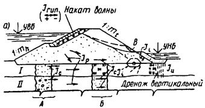
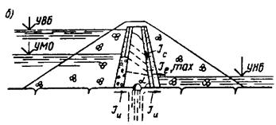
Черт. 9. Фильтрационные деформации в земляных и каменно-земляных плотинах и их основаниях
а - однородная плотина на слоистом основании; б - каменно-земляная плотина на скальном основании; А, Б - сопряжение несвязного и связного грунтов оснований; В - область местного выпора грунта в случае выхода потока на откос; Je,max - расчетный (максимальный) градиент напора в зоне высачивания потока на уровне воды нижнего бьефа; a - угол наклона низового откоса ядра к горизонту; Jp, Jc, Ju, Ji, Jrun - градиенты напора соответственно суффозии, контактного размыва, выпора, входа фильтрационного потока в дренаж, пульсации в обратном фильтре от наката и спада волн
При неоднородном или анизотропном геологическом строении основания указанные в настоящем пункте параметры фильтрационного потока следует определять с учетом этих особенностей.
При выполнении фильтрационных расчетов талых плотин из грунтовых материалов, возводимых в северной строительно-климатической зоне, указанные параметры фильтрационного потока следует определять с учетом изменения границ зон мерзлых грунтов в теле и основании плотины в ходе ее строительства и эксплуатации.
5.5*. Фильтрационную прочность тела плотины, а также противофильтрационных устройств оценивают на основе соответствующих расчетов и экспериментальных исследований грунтов при действующих в сооружении градиентах напора с учетом напряженно-деформированного состояния сооружения и его основания, особенностей конструкции, методов возведения и условий эксплуатации.
Расчеты фильтрационной прочности надлежит выполнять исходя из наибольшего напора, действующего на плотину.
При оценке фильтрационной прочности необходимо выполнить условие
Jest,m £ 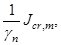
где Jest,m - действующий средний градиент напора в расчетной области фильтрации;
Jcr,m - критический средний градиент напора, принимаемый на основании исследований грунтов в условиях, отвечающих реальным условиям эксплуатации сооружения. В предварительных расчетах и при отсутствии необходимых исследований значения Jcr,m могут быть приняты в соответствии с имеющимися аналогами или по табл. 8;
gn - коэффициент надежности по ответственности сооружений, определяемый по СНиП 2.06.01-86.
Таблица 8
|
Значения критических средних градиентов напора Jcr,m для |
|||
|
понура |
экрана и ядра |
тела и призмы плотины |
|
|
Глина, глинобетон |
15 |
12 |
8 - 2 |
|
Суглинок |
10 |
8 |
4 - 1,5 |
|
Супесь |
3 |
2 |
2 - 1 |
|
Песок: |
|||
|
средний |
- |
- |
1 |
|
мелкий |
- |
- |
0,75 |
Примечание. Проверку фильтрационной прочности тела или призмы плотины из грунтовых материалов выполняют для поперечного профиля, назначенного исходя из расчетов устойчивости откосов.
В результате проверки фильтрационной прочности уточняют конструкцию плотины, в частности местоположение дренажа.
Значения критического среднего градиента принимают в зависимости от физико-механических свойств грунта и способа его укладки, причем большие значения Jcr,m назначают для более плотного грунта.
5.6. При проектировании обратных фильтров, дренажей и переходных слоев надлежит:
а) устанавливать расчетные параметры (зерновой состав, плотность, пористость, коэффициент фильтрации и пр.) грунтов, защищаемых обратными фильтрами, оценивать их суффозионную прочность (суффозионность) и определять расчетные размеры сводообразующих частиц и диаметр пор (da и da,max) защищаемого грунта в зависимости от его состава и условий фильтрационного потока;
б) выбирать естественные карьерные грунты или искусственно получаемые (щебеночные, гранулированный шлак и др.), которые могут быть использованы для устройства обратных фильтров;
в) подбирать зерновой состав первого слоя обратного фильтра и последующих слоев (если в этом есть необходимость) из выбранных естественных карьерных или искусственных материалов;
г) проверять суффозионную прочность и устойчивость грунтов, защищаемых обратным фильтром, и грунтов обратных фильтров;
д) устанавливать толщину и число слоев обратных фильтров;
е) устанавливать допустимые пределы отступлений в зерновом составе, толщине слоев и плотности грунтов фильтра при их укладке в дренажи или переходные слои.
5.7. Для обратных фильтров, дренажей и переходных слоев допускаемый коэффициент разнозернистости фильтровых материалов k60,10 должен удовлетворять условиям:
а) если защищаемый грунт несуффозионный сыпучий,
k60,10 £ (20 - 25),
где меньшее значение k60,10 следует принимать для скатанных частиц песчаных и гравийных грунтов, а большее - для щебенистых грунтов фильтра;
б) если защищаемый грунт суффозионный сыпучий,
k60,10 £ 15;
в) если защищаемый грунт глинистый с числом пластичности Ip ³ 0,07 (допускается при обосновании Ip ³ 0,05),
k60,10 £ 50.
Формулу k60,10 £ 50 следует принимать как для обратных фильтров дренажей, так и для переходных слоев плотин.
При толщине переходного слоя плотин более 3 м величина k60,10 может быть принята более 50 (при соответствующем обосновании);
г) для фильтров, устраиваемых из пористого бетона,
k60,10 £ 12;
д) для фильтров, выполняемых отсыпкой материалов в воду,
k60,10 £ 10.
Здесь
k60,10 = d60 : d10, (6)
где d60, d10 - размеры фракций грунта, масса которых вместе с массой более мелких фракций составляет соответственно 60 и 10 % массы всего грунта.
Для фильтров, выполняемых из материалов с k60,10 £ 10, толщину слоев назначают согласно указаниям п. 2.70, а для фильтров, выполняемых из материалов k60,10 > 10, толщину слоев необходимо назначать по результатам опытных отсыпок с учетом сегрегации фильтровых материалов, возникающей при транспортировании, отсыпке и разравнивании слоев фильтра.
5.8. Отказ от устройства обратных фильтров или переходных слоев для противофильтрационных призм, укладываемых по насыпи крупнообломочных грунтов, допускается при наличии соответствующего обоснования.
5.9. Вместо грунтовых обратных фильтров допускается предусматривать при соответствующем обосновании обратные фильтры из пористого бетона и других пористых материалов.
5.10*. Расчеты устойчивости откосов грунтовых плотин всех классов следует выполнять для круглоцилиндрических поверхностей сдвига. При наличии в основании или теле сооружения ослабленных зон, прослоек грунта с более низкими прочностными свойствами, при оценке устойчивости экрана или защитного слоя и т.д. следует выполнять расчеты для произвольных поверхностей сдвига.
При расчетах следует использовать методы, удовлетворяющие условиям равновесия призмы обрушения и ее элементов в предельном состоянии и учитывающие напряженное состояние сооружения и его основания. Применительно к конкретным геологическим условиям и конструкции плотины могут быть использованы при соответствующем обосновании проверенные практикой упрощенные методы расчета. При однородных характеристиках грунта и отсутствии фильтрационных сил можно пользоваться методами, предполагающими монолитную призму обрушения. В тех же условиях при плоской поверхности откоса и несвязном грунте достаточно оценивать устойчивость малого объема (частицы) грунта на его поверхности сопоставлением коэффициента внутреннего трения материала с крутизной откоса. Для расчета устойчивости откосов плотин I и II классов может быть применен метод, приведенный в рекомендуемом приложении 5*.
При расчетах устойчивости откосов грунтовых плотин всех классов, возводимых в северной строительно-климатической зоне, используя методы, удовлетворяющие условиям равновесия призмы обрушения и ее элементов в предельном состоянии, следует учитывать как напряженное, так и температурное состояние грунтов плотины и ее основания.
5.11*. Устойчивость откоса плотины должна быть проверена по возможным поверхностям сдвига с нахождением наиболее опасной призмы обрушения, характеризуемой минимальным отношением обобщенных предельных реактивных сил сопротивления к активным сдвигающим силам.
Критерием устойчивости откосов плотины является соблюдение (для наиболее опасной призмы обрушения) неравенства
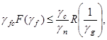
где F - расчетное значение обобщенного силового воздействия, определяемое с учетом коэффициента надежности по нагрузке gf (в зависимости от метода расчета устойчивости откосов F - равнодействующая активных сил или моментов этих сил относительно оси поверхности сдвига);
R - расчетное значение обобщенной несущей способности системы «сооружение - основание», определяемое с учетом коэффициента безопасности по грунту gg, т.е. обобщенное расчетное значение сил предельного сопротивления сдвигу по рассматриваемой поверхности;
gf, gn, gfc - коэффициенты надежности по нагрузке, ответственности сооружения, сочетания нагрузок, определяемые по СНиП 2.06.01-86;
gg - коэффициент надежности по грунту, определяемый по СНиП 2.02.02-85;
gc - коэффициент условий работы.
При поиске опасной поверхности сдвига может быть использована зависимость для коэффициента устойчивости ks:
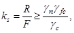
Полученные расчетом значения коэффициента устойчивости
при соответствующем сочетании нагрузок не должны превышать величины 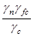
Числовые значения коэффициентов gn, gc и gfc приведены в табл. 9 - 11.
Таблица 9
|
I |
II |
III |
IV |
|
|
Значение gn |
1,25 |
1,20 |
1,15 |
1,10 |
Таблица 10
|
Сочетание нагрузок |
Основное |
Особое |
Строительного периода |
|
Значение gfc |
1,00 |
0,90 |
0,95 |
Таблица 11
|
Методы расчета |
Удовлетворяющие условиям равновесия |
Упрощенные |
|
Значение gc |
1,00 |
0,95 |
5.12*. При расчетах устойчивости откосов плотин необходимо рассматривать следующие случаи.
Для низового откоса:
а) первый расчетный случай (основной): в верхнем бьефе - нормальный подпорный уровень (НПУ), в теле плотины - установившаяся фильтрация; при наличии воды в нижнем бьефе глубину ее принимают максимально возможной при НПУ, но не более 0,2hi, где hi - высота откоса;
б) второй расчетный случай (основной) при открытых водосбросах (без затворов): подпорный уровень и уровень нижнего бьефа определяются максимальным расходом, относимым к основным сочетаниям нагрузок и воздействий;
а) третий расчетный случай (особый): в верхнем бьефе - форсированный подпорный уровень воды (ФПУ), в нижнем бьефе глубину воды принимают максимальной, соответствующей ФПУ.
Для верхового откоса:
а) первый расчетный случай (основной): максимальное возможное снижение уровня воды в водохранилище от НПУ или от подпорного уровня, соответствующего пропуску максимального расхода, относимого к основным сочетаниям воздействий, с наибольшей возможной скоростью, при этом учитывают фильтрационные силы неустановившейся фильтрации;
б) второй расчетный случай (строительного периода): уровень воды в верхнем бьефе находится на самой низкой отметке, но не ниже 0,2hi, где - hi - высота откоса; уровень грунтовой воды в теле плотины принимают соответствующим установившемуся;
в) третий расчетный случай (особый): максимальное возможное снижение уровня воды в водохранилище от ФПУ с наибольшей возможной скоростью, при этом учитывают фильтрационные силы неустановившейся фильтрации.
Примечания: 1. Для земляных плотин с волногасящими откосами следует производить расчет устойчивости с учетом волнового воздействия (согласно рекомендуемому приложению 6*).
2. При расчете устойчивости откосов земляных намывных плотин необходимо учитывать фильтрацию из прудка при проектируемом его положении в период намыва плотины и насыщение водой грунтов откосов (расчетный случай строительного периода).
3. При расчете устойчивости откосов плотин в сейсмических районах сейсмические воздействия учитывают согласно СНиП II-7-81*.
Устойчивость верхового откоса плотины в условиях сейсмического воздействия следует проверять как для случая быстрого снижения уровня воды в водохранилище от МПУ до наиболее низкого эксплуатационного уровня, так и для случая продолжительного стояния НПУ (или ПУ, соответствующего пропуску расхода, относимого к основным воздействиям).
4. Если консолидация связных грунтов плотины и ее основания не завершается к моменту окончания строительства, в расчетах устойчивости откосов следует учитывать поровое давление как для строительного, так и для эксплуатационного случаев.
5. Для плотин с грунтовым экраном следует рассчитывать устойчивость экрана на откосе плотины и устойчивость крепления на экране. Для участков поверхности сдвига на контакте экрана и плотины или крепления экрана прочностные характеристики принимают для грунта экрана.
6. Расчет устойчивости боковых призм земляных намывных плотин с ядром из глинистого грунта надлежит выполнять с учетом порового давления в период консолидации ядра (расчетный случай строительного периода).
5.13*. При расчете устойчивости откосов плотин прочностные характеристики грунтов тела плотин III и IV классов следует принимать постоянными, а плотин I и II классов - переменными в зависимости от напряженного и температурного состояния грунта в зоне прохождения поверхности сдвига.
5.14*. Напряженно-деформированное и температурное состояния тела плотины из грунтовых материалов и ее основания следует учитывать в расчетах устойчивости откосов плотины, фильтрационной прочности на контакте водоупорных элементов с основанием, проверки трещиностойкости водоупорных элементов, прочности негрунтовых противофильтрационных устройств, анализа поведения плотины при проведении натурных исследований, а также для подбора материалов плотины.
5.15*. В расчетах напряженно-деформированного состояния плотин I и II классов следует, как правило, применять нелинейные модели, учитывающие пластические деформации грунта в предельном состоянии, при условии определения параметров деформирования испытанием образцов грунта в одометрах и стабилометрах. При этом размеры образцов должны отвечать зерновому составу грунта тела плотины и основания. Для крупнозернистого грунта допускается использовать модельный грунт, в расчетах необходимо учитывать поэтапность возведения плотины, скорость заполнения водохранилища, а для плотин, возводимых в северной строительно-климатической зоне, последовательность промораживания и оттаивания тела и основания плотины.
Для плотин III и IV классов допускается производить расчеты по модели линейно-деформированного тела.
5.16*. Расчет осадок тела и основания плотины следует производить для определения требуемого строительного подъема плотины, а также для уточнения объема работ по сооружению плотины. Для намывных плотин строительный подъем определяют согласно требованиям настоящего пункта и пп.5.17*, 5.18 независимо от запаса грунта на уплотнение в теле сооружения в процессе намыва, устанавливаемого в соответствии с требованиями СНиП 3.02.01-87.
Расчет осадок плотины следует производить в каждом характерном ее поперечном сечении по нескольким вертикалям, проходящим в элементах плотины из различных материалов (ядре, экране, призме и т.д.).
При расчете осадок основания и тела плотины следует соблюдать требования СНиП 2.02.02-85 и СНиП 2.02.04-88.
5.17*. Для плотин I и II классов расчет осадок и их изменения во времени следует производить на основании результатов экспериментальных исследований сжимаемости грунтов с учетом напряженно-деформированного состояния плотин Поровое давление, ползучесть грунта, его просадочность и набухание при повышении влажности в период эксплуатации необходимо учитывать в зависимости от их наличия.
Напряженно-деформированное состояние плотин, возводимых в северной строительно-климатической зоне, следует определять с учетом температурного режима грунтов плотины и ее основания.
Для плотин III и IV классов допускается производить расчет осадок по приближенным зависимостям с использованием значений модулей деформаций по СНиП 2.02.02-85.
5.18. Поровое давление следует учитывать в расчетах в случаях, когда максимальное значение коэффициента порового давления ru,max, определяемое отношением порового давления u к максимальному значению приложенного напряжения s, превышает нормативное значение коэффициента порового давления run = 0,1.
Величину ru,max следует определять по формуле
ru,max = ruc ruo, (9)
используя известные значения ruc - коэффициента порового давления, определяемого по схеме закрытой системы (без учета оттока воды из грунта), и ruo - коэффициента порового давления, определяемого по схеме открытой системы (с учетом оттока воды из грунта).
Величины ruc и ruo следует устанавливать по графикам рекомендуемого приложения 1.
5.19*. Горизонтальные смещения плотин определяют путем расчета напряженно-деформированного состояния с учетом изменения сжимаемости грунтов при повышении их влажности, а в северной строительно-климатической зоне - при изменении их температурно-влажностного состояния.
Для плотин II - IV классов допускается оценивать горизонтальные смещения на основе аналогов плотин, построенных в подобных условиях и такой же конструкции. Для предварительных оценок горизонтальных смещений гребня плотины следует принимать их равными осадке гребня после наполнения водохранилища.
5.20*. При проектировании плотин с экраном или ядром (диафрагмой) необходимо учитывать деформации береговых склонов.
В плотинах с негрунтовыми экранами и диафрагмами надлежит рассчитывать продольные и поперечные смещения экранов и диафрагм. Напряженно-деформированное состояние диафрагмы (экрана) следует рассчитывать с учетом трения грунта по поверхности диафрагмы (экрана), схем опирания устройства на основание и разрезки деформационными швами.
5.21. Плиты крепления откосов плотин следует проверять на прочность от воздействия давления волн и льда в соответствии с требованиями СНиП 2.06.04-82*.
5.22*. Трещиностойкость земляных плотин и водоупорных элементов каменно-земляных плотин следует определять путем расчета их напряженно-деформированного состояния. При этом следует учитывать поровое давление, а для плотин I и II классов - изменение сжимаемости и ползучести в соответствии со свойствами грунтов, слагающих тело плотины и основания. В северной строительно-климатической зоне расчет напряженно-деформированного состояния плотины необходимо выполнять с учетом изменения ее температурно-влажностного состояния в ходе строительства.
5.23*. При проектировании плотин из грунтовых материалов, возводимых в северной строительно-климатической зоне, следует выполнять:
для талых плотин - расчеты температурного режима в ходе строительства и эксплуатации с определением положения границ зон талых и мерзлых грунтов, в теле, основании и береговых примыканиях плотины на любой задаваемый период до установления квазистационарного температурного состояния плотины;
для мерзлых плотин с мерзлотными завесами в теле и основании - расчеты толщины мерзлотной завесы, образующейся вокруг линейной системы СОУ или замораживающих колонок за первый и последующие сезоны работы СОУ;
для талых и мерзлых плотин - расчеты температурного режима ложа и бортов водохранилища и русла в нижнем бьефе вблизи плотины на период до установления квазистационарного состояния.
1. Поровое давление необходимо учитывать при расчетах деформаций основания и тела плотины из грунтовых материалов, а также при определении ее устойчивости, если коэффициент порового давления ru,max к концу ее возведения превышает величину run в какой-либо части тела плотины и ее основания.
Указанные условия определяются критерием
ru,max = ruc ruo.
2. Величину ruc находят по графикам черт. 1 в зависимости от напряжения s, равного давлению вышележащего грунта на горизонтальную площадку, и параметра П.
Черт. 1. Hомограмма для определения коэффициента парового давления ruc
Параметр П определяют по графикам черт. 2
для начального значения степени влажности грунта Sr,in и
отношения 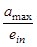
Черт. 2. Номограмма для определения параметра П
3. Величину ruo определяют по
графику черт. 3
в зависимости от коэффициента степени консолидации 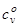
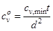
где cv,min - наименьшее значение коэффициента консолидации;
t - время роста нагрузки s до наибольшего значения smax (черт. 4, а, б);
d
= h (черт. 4, a); 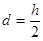
t - время возведения плотины (черт. 4, в, г);
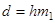
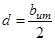
Черт. 3. График зависимости коэффициента порового давления ruo от
4. При оценке величины ru,max рекомендуется вначале определить ruc. Если ruc £ run, то поровое давление можно не учитывать.
Черт. 4. Различные случаи определения коэффициента порового давления ruo
а - слой на водоупоре; б - слой на дренаже; в - однородная плотина; г - ядро каменно-земляной плотины; 1 - нагрузка; 2 - основание; 3 - дренаж; 4 - ядро; 5 - водоупор
В тех случаях, когда ruc > run, необходимо определить величину ruo, а затем ru,max = ruc×ruo.
Величину cv,min рекомендуется определять экспериментально.
5. В случае неоднородного грунта следует принимать для расчета характеристики грунта с наибольшими величинами Sr,in и а.
1. В проектах плотин I-III классов необходимо предусматривать установку контрольно-измерительной аппаратуры (КИА) для проведения натурных наблюдений за работой и состоянием сооружений и их оснований как в процессе строительства, так и в период эксплуатации, используя результаты этих наблюдений для оценки надежности объекта, своевременного выявления дефектов, назначения ремонтных мероприятий, предотвращения аварий и улучшения условий эксплуатации. Натурные наблюдения могут быть контрольными и специальными.
2*. Контрольные натурные наблюдения следует проводить в целях изучения основных параметров работы плотины и основания, комплексного анализа их состояния и оценки эксплуатационной надежности. Состав и объем контрольных наблюдений следует назначать в зависимости от класса плотины, ее конструктивных особенностей, геологических, геокриологических, гидрогеологических, климатических, сейсмических условий, а также условий возведения и требований эксплуатации.
При наблюдениях, как правило, следует определять:
а) отметки уровней воды верхнего и нижнего бьефов;
б) положение депрессионной поверхности в теле плотины и берегах;
в) качество работы дренажа и противофильтрационных устройств;
г) расходы воды, фильтрующейся через плотину и ее основание, а также в берегах и местах примыкания плотины к бетонным сооружениям;
д) мутность, температуру профильтровавшейся воды, а при необходимости и ее химический состав;
е) поровое давление в глинистых элементах тела плотины и основания;
ж) осадку тела плотины, основания и береговых примыканий;
з) горизонтальные смещения гребня, берм и противофильтрационных устройств;
и) напряжения и деформации в теле плотины, противофильтрационных устройствах, а также в основании;
к) сейсмические колебания;
л) ледовые воздействия.
В состав контрольных наблюдений следует включать систематические визуальные наблюдения за состоянием креплений и местными деформациями откосов и гребня плотины, водосбросных кюветов, появлением выходов профильтровавшейся воды, размывами откосов и берегов, появлением наледи, заилением и зарастанием дренажных траншей.
В северной строительно-климатической зоне, помимо указанного состава наблюдений, следует определять температуру воды в верхнем бьефе, включая температуру придонного слоя воды в водохранилище, и температуру грунтов тела и основания плотины, а также проводить наблюдения за работой и состоянием СОУ.
3. Для плотин IV класса и их оснований следует предусматривать комплексные визуальные наблюдения. Инструментальные наблюдения следует, как правило, ограничивать наблюдениями за смещениями, осадкой, положением депрессионной поверхности и фильтрационными расходами. При соответствующем обосновании допускается не проводить инструментальных наблюдений.
4. Специальные натурные наблюдения проводят при соответствующем обосновании в целях получения данных для уточнения методов и результатов расчета и модельных исследований, обоснования конструктивных решений, методов производства работ и улучшения условий эксплуатации плотин.
5. Проект натурных наблюдений должен включать:
а) программу наблюдений с изложением цели, задач, состава, объема, методики с указанием сроков, номенклатуры и технических характеристик КИА;
б) общие схемы и рабочие чертежи размещения и монтажа КИА в плотине, основании, береговых примыканиях и отдельных элементах, прокладки и коммутации кабельных линий и устройства измерительных пультов;
в) рабочие чертежи закладных деталей и монтажных приспособлений для установки КИА;
г) спецификации устанавливаемой КИА, вторичных приборов, вспомогательного оборудования, кабелей;
д) инструкцию по установке КИА, прокладке кабельных линий и оборудованию пультов;
е) смету на приборы, вспомогательное оборудование, кабельную продукцию, проведение наблюдений, обработку и анализ результатов.
Номенклатуру, число приборов и их местоположение в теле плотины, основании, береговых примыканиях и отдельных элементах сооружения назначают, исходя из состава задач и объема наблюдений и исследований. При этом следует стремиться к автоматизации всех наблюдений.
6. В проект должны быть включены требования по периодичности проведения, обработке и систематизации натурных наблюдений за работой и состоянием сооружения и его основания как в период строительства так и в период эксплуатации.
7. При расчетах плотин всех классов должны устанавливаться предельно допустимые значения параметров состояния плотин и их оснований, контролируемые натурными наблюдениями.
Значения предельно допустимых параметров в виде отдельной таблицы включают в проект.
8. Предельно допустимые значения параметров состояния плотины принимаются равными расчетным значениям для основного и особого сочетаний нагрузок и могут уточняться в процессе строительства и эксплуатации.
Норму отмыва устанавливают по характеристике состава карьерного грунта (грунта выемки) с учетом принятой технологии намыва земляного сооружения.
Грунты песчано-гравийных и песчаных карьеров в зависимости от показателей их гранулометрического состава и технологии намыва делятся на пять групп (см. таблицу).
|
Номер группы грунта |
Грунт |
Вид технологии намыва |
Содержание фракций в составе грунта, % |
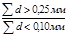 |
k60,10 |
d90, мм |
|
|
d = 0,25 - 0,10 мм |
d > 2 мм |
||||||
|
1 |
Разнозернистые пески с гравием |
Двусторонний с технологическим прудком |
< 50 |
> 5 |
> 1 |
2,5-300 |
> 2 |
|
2 |
Среднезернистые пески |
То же |
< 50 |
< 5 |
> 1 |
< 5 |
< 2 |
|
3 |
Мелкозернистые пески |
» |
> 50 |
- |
- |
< 5 |
- |
|
4 |
Тонкозернистые и пылеватые пески |
» |
< 50* |
- |
< 1 |
> 5* |
- |
|
5 |
Разнозернистые пески с гравием, среднезернистые и мелкозернистые пески |
Односторонний со свободным откосом |
- |
- |
- |
- |
- |
___________
* В большинстве случаев.
Для каждой группы грунтов и принятой технологии намыва сооружения норму отмыва НО определяют по следующим формулам в процентах к объему намываемого сооружения.
1-я группа: разнозернистый песок с гравием, двусторонний намыв -
НО = 0,1 [d = 0,25 - 0,10 мм]% + 0,35 [d = 0,10 - 0,05 мм]% +
+ 0,9 [d = 0,05 - 0,01 мм]% + 0,9[d = 0,01 - 0,005 мм]% + 1 [d < 0,005 мм]%;
2-я группа: среднезернистый песок, двусторонний намыв -
НО = 0,025 [d = 0,25 - 0,10 мм]% + 0,35 [d = 0,10 - 0,05 мм]% +
+ 0,8 [d = 0,05 - 0,01 мм]% + 1 [d < 0,01 мм]%;
3-я группа: мелкозернистый песок, двусторонний намыв -
НО = 0,05 [d = 0,25 - 0,10 мм]% + 0,3 [d = 0,10 - 0,05 мм]% +
+ 0,9 [d = 0,05 - 0,01 мм]% + 1 [d < 0,01 мм]%;
4-я группа: мелкозернистые и пылеватые пески, двусторонний намыв -
НО = 0,11 [d = 0,10 - 0,05 мм]% + 0,5 [d = 0,05 - 0,01 мм]% +
+ 0,6 [d = 0,01 - 0,005 мм]% + 0,9 [d < 0,005 мм]%;
5-я группа: разнозернистые, среднезернистые и мелкозернистые пески, односторонний намыв со свободным откосом -
НО = 0,15 [d = 0,25 - 0,10 мм]% + 0,5 [d = 0,10 - 0,05 мм]% +
+ 0,9 [d = 0,05 - 0,01 мм]% + 1 [d < 0,01 мм]%;
Примечания: 1. Отмыв грунта при одностороннем намыве тонкозернистых и пылеватых грунтов, а также при намыве грунтов в воду без устройства обвалования устанавливают при проектировании технологических схем намыва сооружений с использованием аналогов или результатов опытного намыва.
2. В случаях, когда проектом установлена целесообразность использования для намыва сооружений карьерных грунтов или грунтов полезных выемок без предварительного удаления вскрышного слоя, средневзвешенный гранулометрический состав, по которому определяют норму отмыва, устанавливают по всей толще карьера (выемки) - от поверхности до подошвы забоя.
1. Расчет границ зон фракционирования и осредненного зернового состава намытого грунта в поперечном сечении выполняют для неоднородных плотин.
Фракционирование грунта - процесс, положенный в основу конструкции намывных плотин и проявляющийся в раскладке зерен грунта по крупности по длине откоса намыва с постеленным уменьшением средней крупности намытого грунта по мере удаления от выпуска пульпы из распределительного пульпопровода.
2. Для неоднородных плотин с ядром, намываемых из песчано-гравийного грунта, содержащего пылеватые и глинистые фракции (см. черт. 3, в разд. 3), расчет границ зон фракционирования выполняют по формулам:
расстояние от откоса плотины до внутренней границы боковой зоны X1
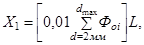
где
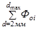
L - расстояние от откоса до оси плотины;
расстояние от откоса плотины до границы ядра X2
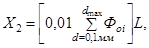
где 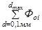
3. Для неоднородных плотин с центральной зоной, намываемых из песчано-гравийных грунтов (см. черт. 3, г, разд. 3) расчет расстояния от откоса плотины до границы центральной зоны X2 выполняют по формуле
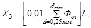
где 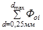
Примечание к пп. 2 и 3. В расчет вводят осредненный состав карьерного грунта.
4.
Осредненный зерновой состав намытого грунта в пределах выделенных зон
фракционирования определяют с помощью графиков 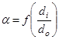
где - процентное содержание составляющих частиц;
- крупность составляющих частиц намытого грунта;
- средневзвешенная крупность карьерного грунта:
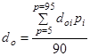
где 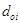
- процентное содержание i-й стандартной фракции;
90 - суммарное содержание учитываемых фракций в составе карьерного грунта, %.
Черт. 1. График зависимости . Однородные песчаные плотины
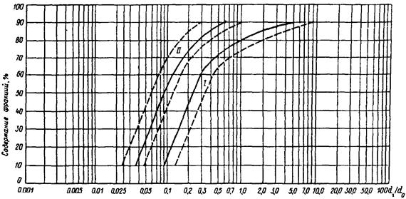
Черт. 2. График зависимости . Неоднородные плотины из мелкого песчано-гравийного грунта с центральной песчаной зоной
I - боковая зона; II - центральная зона
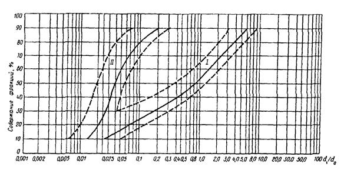
Черт. 3. График зависимости . Неоднородные плотины из крупного песчано-гравийного грунта с центральной песчаной зоной
I - боковая зона; II - центральная зона
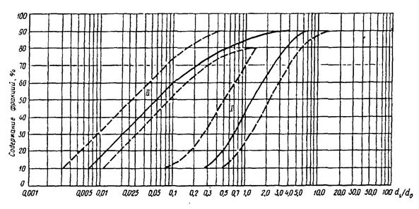
Черт. 4. График зависимости . Гравийные плотины с ядром высотой менее 30 м
I - боковая зона; II - ядро
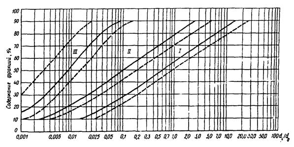
Черт. 5. График зависимости . Гравийные плотины с ядром высотой более 30 м
I - боковая зона; II - промежуточная зона; III - ядро
Примечание. При вычислении отбрасываются все фракции
мельче 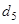
Отношение - снимают с осредненной кривой графиков для разной обеспеченности (10 %, 20 %, ...). Величину di (d10, d20, ...) определяют умножением указанного отношения на заданную величину по формуле
(5)
С помощью полученных значений di строят кривую зернового, состава намытого грунта по каждой зоне.
Согласно п. 5.10* настоящего СНиП в числе рекомендуемых методов расчета устойчивости откосов грунтовых плотин названы методы, оперирующие с расчлененной на вертикальные элементы призмой обрушения и с произвольной или круглоцилиндрической поверхностью сдвига, удовлетворяющие условиям равновесия в предельном состоянии.
В качестве таковых могут быть использованы методы, основанные на гипотезе наклонных сил взаимодействия между элементами призмы обрушения.
Угол наклона к горизонту b этих сил может быть определен из условий равновесия призмы обрушения в предельном состоянии, которое достигается пропорциональным изменением характеристик прочности грунтов от расчетных значений tgj, с до критических tgjk, сk.
При произвольной поверхности сдвига для оценки устойчивости призмы обрушения сопоставляют проекции равнодействующих активных сил FE и сил сопротивления RE на направление сил взаимодействия. При круглоцилиндрической поверхности сдвига можно сопоставлять как моменты этих равнодействующих Fo, Ro относительно оси поверхности сдвига, так и их проекции. Критерием устойчивости призмы обрушения является соотношение
(1)
где - коэффициенты сочетаний нагрузок, условий работы, надежности по ответственности сооружения.
Откос устойчив, если обеспечена устойчивость призмы обрушения с наиболее опасной поверхностью сдвига.
Проекции равнодействующих определяют из условия равновесия элементов призм обрушения по формулам (см. схему):
(2)
где Q = qdx - равнодействующая активных сил, действующих на элемент призмы обрушения;
d - угол отклонения силы Q от вертикали;
а - угол наклона элемента поверхности сдвига к горизонту;
С = cds - сила сцепления, действующая на элемент поверхности сдвига.
Схема сил, действующих на элемент призмы обрушения
Моменты равнодействующих определяют по формулам:
где r - радиус поверхности сдвига;
b - возвышение точки приложения силы Q над поверхностью сдвига.
Угол b в обоих случаях допустимо определять по приближенной зависимости
(4)
Устойчивость откоса в предположении кругло-цилиндрической поверхности сдвига можно проверять по формулам (2) или (3). Отношения и - разные механические понятия, поэтому оценки устойчивости по ним получаются разными. Однако эти оценки совпадают при - = 1 и достаточно близки при - < 1,3, так что разногласий в суждении об устойчивости откоса не возникает.
Если принять в качестве универсальной оценки устойчивости отношение , т.е. подобрать такие значения характеристик прочности, при которых Ro = Fo и RE = FE, результаты расчета обоими способами должны совпадать.
Такой расчет может служить контролем правильности определения угла b, т.е. соблюдения условий равновесия призмы обрушения в предельном состоянии, для найденной наиболее опасной поверхности сдвига.
Влияние воды, насыщающей откос, допускается учитывать двумя способами:
а) первый - вес грунта в пределах каждого элемента определяют с учетом ее капиллярного поднятия, а по контуру элемента (поверхности откоса, поверхности сдвига и плоскостям раздела между элементами) определяют давление воды фильтрационным расчетом;
б) второй - вес грунта элемента определяют с учетом его взвешивания водой; на уровне ее поверхности к грунту прилагают капиллярные силы и к насыщенному водой объему грунта элемента прилагают фильтрационные силы, определяемые расчетом.
Оба способа дают, естественно, тождественные результаты и распространяются на неустановившуюся фильтрацию, в том числе при незавершенной консолидации грунта. При вычислении активной силы FE и активного момента Fî давление воды по плоскостям раздела можно не учитывать, в сумме оно равно нулю. При вычислении Fî можно не учитывать также давление воды по круглоцилиндрической поверхности сдвига, его момент равен нулю.
Влияние сейсмических воздействий на откос определяют по СНиП II-7-81* в форме объемных сейсмических сил, действующих на объем грунта каждого элемента с учетом его насыщения водой, и изменения давления воды на поверхность откоса в пределах элемента.
В расчеты откосов с учетом сейсмических воздействий вводят динамические характеристики прочности грунтов, если они отличаются от статических. Учитывают в соответствующих случаях возникновение избыточного порового давления как следствие сейсмических толчков.
Сейсмические воздействия относятся к особым нагрузкам, их учет исключает другие особые нагрузки.
Предварительная оценка параметров динамически устойчивого при воздействии волн профиля неукрепленного откоса плотин из песчаного грунта («профиля динамического равновесия») может быть выполнена по формулам:
(1)
где m - коэффициент откоса;
mо - коэффициент естественного откоса грунта тела плотины под водой;
hcdl - высота расчетной волны, м;
l - длина расчетной волны, м;
do - средневзвешенный диаметр частиц грунта тела плотины, м;
(2)
где di - размер фракций, м;
рi - доля фракций, % по массе;
kl - коэффициент, принимаемый:
kl = 0,37 для подводной части пляжного откоса от расчетного уровня воды в водохранилище (или в реке) до нижней границы размывающего действия волн (h2), определяемой по формуле
(3)
kl = 0,17 для надводной части пляжного откоса от расчетного уровня воды до верхней границы размывающего действия волн (h2), зависящей от высоты наката, определяемой по СНиП 2.06.04-82*. В первом приближении можно принять h2 = 05 hcdl (см. чертеж).
Определение крутизны верхового неукрепленного откоса песчаной плотины
1 - расчетный уровень воды; 2 - участок откоса при kl = 0,37; 3 - то же, при kl = 0,17
Примечания: 1. При определении крутизны динамически устойчивого откоса необходимо учитывать размывающее влияние косого подхода волн, особенно сильно проявляющееся при углах подхода a = 45-57°.
2. Профиль сооружений необходимо уточнять по данным лабораторных или натурных исследований на основе результатов эксплуатации земляных сооружений с неукрепленными откосами, построенных из аналогичных грунтов и в условиях, близких по волновым и ветровым воздействиям.
Принцип строительства I - вечномерзлые грунты основания плотины сохраняются в мерзлом состоянии при ее строительстве и эксплуатации, а талые грунты противофильтрационного устройства плотины и его основания замораживаются до начала заполнения водохранилища и сохраняются в мерзлом состоянии при эксплуатации.
Принцип строительства II - допускается оттаивание вечномерзлых грунтов основания в ходе строительства и эксплуатации плотины или искусственное их оттаивание на заданную глубину до начала заполнения водохранилища.
Мерзлая плотина - плотина, водонепроницаемость которой обеспечивается мерзлым состоянием грунтов ее противофильтрационного устройства и его основания.
Талая плотина - плотина, грунты тела и основания которой имеют положительную температуру или находятся частично в мерзлом состоянии и позволяют существовать фильтрационному потоку в теле и основании или только в основании плотины.
Тало-мерзлая плотина - плотина, у которой отдельные по напорному фронту участки возводятся по разным принципам строительства. Сопряжения между талыми и мерзлыми участками плотины осуществляются за счет использования охлаждающих устройств.
Талик - участок горной породы с положительной температурой, расположенный в массиве вечномерзлых пород.
Талик речной - талая зона пород под руслом реки, ограниченная мерзлыми породами.
Талик сквозной - талик, прорезающий всю толщину вечномерзлых грунтов в основании водотока и сопрягающийся с подмерзлотными талыми породами.
Мерзлотная завеса - ледогрунтовая стенка, создаваемая в массиве талого грунта с помощью охлаждающих устройств, обладающая водонепроницаемостью и способностью выдерживать механические нагрузки.
Висячая мерзлотная завеса - завеса, нижняя часть которой не смыкается с верхней гранью вечномерзлых грунтов.
Глухая мерзлотная завеса - завеса, которая смыкается с толщей вечномерзлых грунтов основания.
Замораживающие системы - комплексы, состоящие из отдельных или объединенных в группы охлаждающих устройств, установленных в теле и (или) основании плотины, для замораживания и охлаждения грунта.
Сезоннодействующие охлаждающие устройства (СОУ) - теплообменные устройства различного типа, применяемые для охлаждения и замораживания грунта за счет естественных температур воздуха.
1. Теплофизические характеристики грунта (теплопроводность l и объемная теплоемкость С) определяют опытным путем в соответствии с ГОСТ 26263-84.
2. При расчетах температурного состояния сооружений II - IV классов и их оснований, а также при выполнении предварительных теплотехнических расчетов расчетные значения теплофизических характеристик талых и мерзлых песков, супесей, суглинков, глин, заторфованных грунтов и торфа допускается принимать по табл. 3 обязательного приложения 1 СНиП 2.02.04-88.
3. Для супесчано-суглинистых грунтов, укладываемых в противофильтрационные устройства плотин, рекомендуется принимать расчетные значения теплофизических характеристик при аналогичных по плотности и влажности величинах по табл. 3 приложения 1 СНиП 2.02.04-88, а для больших значений плотности уложенного грунта и оптимальных влажностей - по табл. 1 настоящего СНиП.
4. Расчетные значения теплофизических характеристик дресвяно-щебенистых грунтов с супесчано-суглинистым заполнителем, грунтовых смесей с содержанием крупных фракций (диаметром более 2 мм) Рk = 0,1-1,0 и супесчано-суглинистых грунтов с содержанием крупнообломочных включений Рk > 0,1 по массе допускается принимать по табл. 2 настоящего приложения.
5. Для засоленных хлоридами Na и Са искусственных грунтов и грунтовых смесей, используемых для укладки в тело плотины, теплофизические характеристики рекомендуется определять по табл. 3 настоящего приложения.
Таблица 1
|
Плотность (сухого грунта) rdf, т/м3 |
Грунты |
||||||
|
талый |
мерзлый |
||||||
|
суммарная влажность Wtot,, доли единицы |
теплопроводность, lth , Вт/(м×°С) [ккал/(м×ч×°С)] |
теплоемкость Cth, Дж/(м3×°С)10-6 [ккал/(м3×°С)] |
плотность (сухого грунта) rdf, т/м3 |
суммарная влажность Wtot,, доли единицы |
теплопроводность, Вт/(м×°С) [ккал/(м×ч×°С)] |
теплоемкость, Дж/(м3×°С)10-6 [ккал/(м3×°С)] |
|
|
- |
- |
- |
- |
1,7 |
0,03 |
0,56 (0,51) |
1,35 (320) |
|
1,8 |
0,02 |
0,47 (0,41) |
1,40 (330) |
- |
- |
- |
- |
|
2,2 |
0,03 |
1,13 (0,98) |
2,30 (550) |
2,2 |
0,03 |
1,14 (0,98) |
2,05 (490) |
|
- |
- |
- |
- |
1,6 |
0,06 |
0,52 (0,44) |
1,35 (320) |
|
1,9 |
0,08 |
1,13 (0,98) |
2,15(510) |
1,9 |
0,07 |
0,92 (0,79) |
2,20 (525) |
|
2,1 |
0,08 |
1,18 (1,02) |
2,50 (595) |
2,1 |
0,08 |
1,26 (1,08) |
2,25 (535) |
|
2,2 |
0,07 |
1,87 (1,61) |
2,50 (595) |
2,2 |
0,07 |
1,09 (0,94) |
1,80 (420) |
|
1,6 |
0,12 |
0,63 (0,54) |
2,05 (490) |
1,6 |
0,11 |
0,54 (0,49) |
1,80 (420) |
|
1,8 |
0,12 |
0,85 (0,73) |
2,30 (550) |
1,8 |
0,12 |
0,78 (0,67) |
2,20 (525) |
|
2,2 |
0,12 |
1,55 (1,33) |
3,00 (715) |
2,2 |
0,13 |
0,84 (0,72) |
2,75 (655) |
|
1,6 |
0,13 |
0,68 (0,58) |
2,15 (510) |
1,6 |
0,13 |
0,76 (0,66) |
1,75 (420) |
|
1,8 |
0,13 |
1,02 (0,87) |
2,30 (550) |
1,8 |
0,13 |
1,12 (0,97) |
2,35 (560) |
|
2,0 |
0,13 |
1,31 (1,12) |
3,05 (725) |
2,0 |
0,13 |
1,37 (1,14) |
2,55 (610) |
|
1,6 |
0,19 |
1,09 (0,93) |
2,80 (665) |
1,6 |
0,19 |
1,09 (0,94) |
2,25 (535) |
|
1,8 |
0,19 |
1,31 (1,13) |
3,00 (715) |
1,8 |
0,19 |
1,20 (1,03) |
2,30 (550) |
|
1,9 |
0,19 |
1,82 (1,39) |
3,20 (760) |
1,9 |
0,19 |
1,35 (1,16) |
2,70 (645) |
|
1,6 |
0,23 |
1,21 (1,04) |
3,15 (750) |
1,6 |
0,24 |
1,05 (0,91) |
2,30 (550) |
|
1,8 |
0,24 |
1,56 (1,35) |
3,35 (795) |
1,8 |
0,24 |
1,20 (1,03) |
2,35 (560) |
Таблица 2
|
Содержание крупных фракций d > 2 мм, rk доли единицы |
Плотность сухого грунта r, т/м3 |
Суммарная влажность грунта Wtot, доли единицы |
Теплопроводность грунта, Вт/(м×°С) [ккал/(м×ч×°С)] |
Объемная теплоемкость грунта, Дж/(м3×°С)10-6 [ккал/(м3×°С)] |
||
|
lth |
lf |
Cth |
Cf |
|||
|
0,10 |
1,60 |
0,04 |
0,40 (0,34) |
0,48 (0,41) |
1,53 (365) |
1,03 (244) |
|
1,60 |
0,08 |
0,63 (0,55) |
0,63 (0,54) |
1,86 (444) |
1,59 (380) |
|
|
1,60 |
0,13 |
0,88 (0,76) |
0,74 (0,64) |
2,37 (565) |
1,60 (380) |
|
|
1,60 |
0,16 |
1,19(1,02) |
1,26 (1,09) |
2,54 (605) |
1,95 (465) |
|
|
1,60 |
0,21 |
1,20 (1,03) |
1,28 (1,10) |
3,32 (790) |
2,30 (550) |
|
|
0,20 |
1,60 |
0,12 |
0,83 (0,72) |
0,77 (0,66) |
2,32 (550) |
1,51 (360) |
|
1,60 |
0,16 |
0,88 (0,76) |
1,04 (0,90) |
2,42 (580) |
1,93 (460) |
|
|
1,60 |
0,21 |
1,11 (0,96) |
1,27 (1,09) |
3,10 (740) |
1,97 (470) |
|
|
0,30 |
1,60 |
0,05 |
0,44 (0,38) |
0,38 (0,33) |
1,60 (380) |
0,87 (205) |
|
1,60 |
0,08 |
0,65 (0,56) |
0,59 (0,51) |
2,05 (485) |
1,40 (340) |
|
|
1,60 |
0,14 |
0,81 (0,70) |
- |
2,25 (535) |
- |
|
|
1,60 |
0,22 |
1,08 (0,93) |
- |
2,80 (660) |
- |
|
|
0,45 |
1,60 |
0,04 |
0,36 (0,31) |
0,33 (0,28) |
1,38 (330) |
1,21 (290) |
|
1,60 |
0,12 |
0,65 (0,56) |
0,72 (0,62) |
2,18 (520) |
1,48 (350) |
|
|
1,60 |
0,16 |
0,81 (0,70) |
0,76 (0,66) |
2,18 (520) |
1,64 (390) |
|
|
1,80 |
0,20 |
1,13 (0,97) |
1,13 (0,97) |
3,18 (760) |
2,43 (580) |
|
|
0,60 |
1,60 |
0,12 |
0,80 (0,69) |
0,85 (0,73) |
2,13 (730) |
1,42 (340) |
|
2,00 |
0,16 |
1,63 (1,41) |
1,66 (1,43) |
2,66 (635) |
2,27 (540) |
|
|
1,80 |
0,20 |
1,70 (1,47) |
1,64 (1,41) |
3,18 (760) |
2,50 (600) |
|
|
0,70 |
1,70 |
0,04 |
0,37 (0,32) |
0,55 (0,77) |
1,63 (390) |
1,16 (280) |
|
1,60 |
0,08 |
0,49 (0,42) |
0,65 (0,56) |
1,87 (445) |
1,59 (380) |
|
|
1,60 |
0,12 |
0,92 (0,79) |
0,77 (0,66) |
2,11 (500) |
1,61 (385) |
|
|
1,85 |
0,16 |
1,51 (1,30) |
1,45 (1,25) |
2,50 (600) |
2,10 (500) |
|
|
1,85 |
0,17 |
1,63 (1,41) |
1,70 (1,74) |
3,01 (720) |
2,38 (550) |
|
|
0,85 |
1,60 |
0,04 |
0,36 (0,31) |
0,41 (0,35) |
1,44 (345) |
0,93 (220) |
|
1,60 |
0,09 |
0,71 (0,61) |
0,59 (0,51) |
1,91 (450) |
1,53 (364) |
|
|
1,70 |
0,12 |
1,00 (0,86) |
0,97 (0,84) |
2,25 (540) |
1,35 (321) |
|
|
1,85 |
0,16 |
1,77 (1,53) |
- |
2,74 (650) |
2,31 (550) |
|
|
1,80 |
0,17 |
1,80 (1,55) |
1,51 (1,30) |
3,11 (740) |
2,23 (530) |
|
|
1,00 |
1,60 |
0,04 |
0,42 (0,36) |
0,42 (0,36) |
1,50 (360) |
0,88 (210) |
|
1,60 |
0,09 |
0,88 (0,76) |
0,80 (0,69) |
1,98 (470) |
1,47 (350) |
|
|
1,60 |
0,12 |
1,01 (0,87) |
1,05 (0,91) |
2,09 (500) |
1,60 (380) |
|
|
1,60 |
0,16 |
1,07 (0,92) |
1,49 (1,28) |
2,28 (540) |
2,12 (510) |
|
|
1,60 |
0,21 |
1,35(1,16) |
1,64(1,40) |
2,88 (690) |
2,10 (500) |
|
Обозначения, принятые в таблице:
lth; lf - теплопроводность соответственно талого и мерзлого грунтов;
Cth; Cf - объемная теплоемкость соответственно талого и мерзлого грунтов.
Таблица 3
|
Плотность сухого грунта r, т/м3 |
Суммарная влажность грунта Wtot, доли единицы |
Теплопроводность грунта, Вт/(м×°С) [ккал/(м×ч×°С)] |
Объемная теплоемкость грунта Дж/(м3×°С)10-6 [ккал/(м3×°С)] |
|||||
|
lth |
lf |
Cth |
Cf |
|||||
|
А. Засоление хлоридами Nа |
||||||||
|
0,04 |
1,55 |
0,13 |
0,90(0,78) |
0,70(0,60) |
2,45(580) |
1,55(370) |
||
|
1,80 |
0,13 |
0,99(0,85) |
0,86(0,74) |
2,95(700) |
1,80(430) |
|||
|
1,90 |
0,13 |
1,20(1,03) |
1,06(0,91) |
3,20(760) |
2,05(490) |
|||
|
1,60 |
0,19 |
1,08(0,93) |
1,12(0,97) |
2,50(595) |
2,50(595) |
|||
|
1,80 |
0,19 |
1,27(1,09) |
1,04(0,90) |
2,95(702) |
2,80(665) |
|||
|
1,95 |
0,19 |
1,43(1,23) |
1,24(1,07) |
3,30(785) |
3,00(715) |
|||
|
1,60 |
0,22 |
1,19(1,03) |
1,24(1,07) |
2,65(630) |
2,60(705) |
|||
|
1,80 |
0,22 |
1,44(1,24) |
1,26(1,08) |
3,35(800) |
2,40(570) |
|||
|
1,55 |
0,26 |
1,28(1,10) |
1,15(1,03) |
3,10(740) |
2,95(705) |
|||
|
0,16 |
1,60 |
0,13 |
0,97(0,84) |
0,78(0,67) |
2,25(535) |
3,80(905) |
||
|
1,80 |
0,13 |
1,14(0,98) |
1,04(0,89) |
2,85(680) |
4,25(1015) |
|||
|
2,00 |
0,13 |
1,40(1,21) |
1,28(1,10) |
2,30(550) |
4,45(1060) |
|||
|
1,60 |
0,17 |
1,00(0,86) |
0,83(0,72) |
2,35(560) |
3,30(785) |
|||
|
1,85 |
0,17 |
1,19(1,03) |
1,01(0,87) |
2,70(645) |
4,60(1100) |
|||
|
1,95 |
0,17 |
1,51(1,30) |
1,00(0,86) |
3,00(715) |
4,55(1085) |
|||
|
1,60 |
0,21 |
1,16(1,00) |
1,02(0,88) |
2,70(645) |
4,10(975) |
|||
|
1,70 |
0,20 |
1,27(1,09) |
1,43(1,23) |
2,85(680) |
4,35(1035) |
|||
|
1,80 |
0,20 |
1,55(1,34) |
1,28(1,10) |
3,10(740) |
5,70(1360) |
|||
|
1,60 |
0,25 |
1,24(1,07) |
1,16(1,00) |
2,80(665) |
4,45(1060) |
|||
|
0,26 |
1,60 |
0,13 |
0,86(0,74) |
0,91(0,79) |
2,15(510) |
1,95(465) |
||
|
1,80 |
0,13 |
1,08(0,93) |
0,92(0,80) |
2,50(595) |
1,95(465) |
|||
|
2,00 |
0,13 |
1,27(1,09) |
1,16(1,00) |
2,85(680) |
2,10(500) |
|||
|
1,60 |
0,17 |
0,93(0,80) |
0,72(0,62) |
2,35(560) |
1,70(405) |
|||
|
1,80 |
0,16 |
1,12(0,97) |
1,05(0,91) |
2,70(645) |
2,30(550) |
|||
|
2,00 |
0,17 |
1,38(1,18) |
1,06(0,92) |
3,05(730) |
2,35(560) |
|||
|
1,60 |
0,19 |
1,01(0,87) |
1,01(0,87) |
2,65(630) |
2,05(490) |
|||
|
1,80 |
0,19 |
1,30(1,12) |
1,11(0,96) |
3,05(730) |
2,20(525) |
|||
|
1,60 |
0,21 |
1,21(1,04) |
0,94(0,81) |
2,85(680) |
2,75(655) |
|||
|
Б. Засоление хлоридами Ca |
||||||||
|
0,05 |
1,70 |
0,13 |
0,95(0,82) |
0,92(0,79) |
2,65(630) |
1,95(465) |
||
|
1,80 |
0,13 |
0,88(0,76) |
0,93(0,80) |
2,75(655) |
2,05(490) |
|||
|
2,00 |
0,13 |
1,44(1,24) |
1,20(1,03) |
2,75(655) |
2,25(535) |
|||
|
1,60 |
0,17 |
0,98(0,85) |
1,00(0,86) |
2,65(630) |
2,35(560) |
|||
|
1,80 |
0,17 |
1,29(1,11) |
1,14(0,98) |
3,05(725) |
2,50(595) |
|||
|
2,00 |
0,17 |
1,42(1,22) |
1,24(1,07) |
3,15(750) |
2,95(700) |
|||
|
1,50 |
0,22 |
0,86(0,75) |
0,94(0,81) |
2,55(610) |
2,35(560) |
|||
|
1,60 |
0,23 |
0,99(0,85) |
1,04(0,90) |
3,05(730) |
2,75(655) |
|||
|
1,80 |
0,22 |
1,24(1,07) |
1,64(1,41) |
3,15(750) |
2,70(645) |
|||
|
0,12 |
1,60 |
0,13 |
0,55(0,47) |
0,54(0,47) |
2,85(680) |
2,20(525) |
||
|
1,90 |
0,13 |
1,45(1,25) |
1,07(0,92) |
2,95(705) |
3,30(785) |
|||
|
2,00 |
0,13 |
1,55(1,34) |
1,13(0,97) |
3,05(725) |
3,70(880) |
|||
|
1,60 |
0,15 |
0,84(0,72) |
0,73(0,63) |
2,55(610) |
2,95(700) |
|||
|
1,80 |
0,15 |
1,45(1,25) |
0,92(0,79) |
2,95(705) |
3,25(775) |
|||
|
2,00 |
0,15 |
1,59(1,37) |
0,94(0,81) |
3,20 (760) |
3,85 (915) |
|||
|
1,60 |
0,21 |
0,90(0,78) |
1,16(1,00) |
2,75 (665) |
3,90 (930) |
|||
|
1,80 |
0,21 |
1,36(1,17) |
0,91(0,79) |
2,88 (690) |
3,90 (930) |
|||
|
0,27 |
1,55 |
0,12 |
0,70 (0,60) |
0,64 (0,55) |
2,10 (500) |
1,50 (360) |
||
|
1,80 |
0,12 |
0,81 (0,70) |
0,98 (0,84) |
2,30 (550) |
1,95 (465) |
|||
|
2,00 |
0,12 |
1,20 (1,03) |
1,15 (0,99) |
2,40 (570) |
2,05 (490) |
|||
|
1,60 |
0,15 |
0,90 (0,78) |
0,79 (0,68) |
2,20 (525) |
1,90 (450) |
|||
|
1,80 |
0,15 |
1,18 (1,02) |
0,91 (0,78) |
2,60 (620) |
1,91 (455) |
|||
|
2,00 |
0,15 |
1,21 (1,04) |
0,94 (0,81) |
2,80 (665) |
2,15 (510) |
|||
|
0,39 |
1,60 |
0,11 |
0,71 (0,61) |
0,63 (0,54) |
2,30 (545) |
1,55 (370) |
||
|
1,90 |
0,11 |
1,21 (1,04) |
1,12 (0,96) |
2,50 (595) |
2,05 (490) |
|||
|
2,00 |
0,11 |
1,34 (1,16) |
1,19 (1,03) |
2,55 (610) |
2,05 (490) |
|||
|
1,60 |
0,13 |
0,97 (0,84) |
0,70 (0,60) |
2,35 (560) |
1,90 (450) |
|||
|
1,75 |
0,13 |
1,06 (0,91) |
0,90 (0,78) |
2,40 (570) |
2,10 (500) |
|||
|
2,00 |
0,13 |
1,33 (1,15) |
0,93 (0,80) |
2,75 (655) |
2,20 (525) |
|||
|
1,60 |
0,16 |
0,72 (0,62) |
0,47 (0,41) |
2,65 (630) |
1,50 (360) |
|||
|
1,80 |
0,16 |
1,12 (0,96) |
1,02 (0,87) |
2,70 (645) |
2,05 (490) |
|||
|
2,00 |
0,16 |
1,35 (1,16) |
1,12 (0,96) |
2,90 (690) |
2,50 (595) |
|||
|
1,60 |
0,18 |
1,08 (0,93) |
0,71 (0,61) |
2,65 (630) |
1,90 (450) |
|||
|
1,80 |
0,18 |
1.35 (1,16) |
0,99 (0,85) |
3,10 (740) |
2,85 (680) |
|||
Обозначения, принятые в таблице:
lth; lf - теплопроводность соответственно талого и мерзлого грунтов;
Cth; Cf - объемная теплоемкость соответственно талого и мерзлого грунтов.
1. Грунтовые плотины со стальными диафрагмами могут быть рекомендованы: для строительства в северной строительно-климатической зоне; при отсутствии вблизи строительства грунтов, пригодных для устройства ядра, экрана или обратных фильтров; для районов с очень влажным климатом; во всех других случаях при соответствующем технико-экономическом обосновании их преимуществ перед другими видами плотин.
2. Плотины со стальными диафрагмами могут возводиться из каменной наброски, горной массы, песчаных, гравийных, галечных, дресвяных и щебеночных грунтов.
3. Стальные диафрагмы допускается применять в плотинах I - IV классов.
4. Стальную диафрагму рекомендуется располагать в теле плотины вертикально в плоскости, проходящей по оси гребня или по его верховой бровке.
5. Сопряжение стальной диафрагмы с основанием плотины и береговыми склонами должно осуществляться посредством бетонного зуба, плиты или цементационной потерны с устройством под опорным элементом диафрагмы периметрального шва из битумных или других гидроизоляционных материалов, либо другими способами, обеспечивающими смещение опоры диафрагмы по опорной плоскости при воздействии горизонтальных нагрузок, а также водонепроницаемость шва. С бетонными сооружениями, встроенными в плотину (водосброс, водоприемник и пр.), стальную диафрагму рекомендуется сопрягать заделкой ее в бетон устоев, но с устройством в ней в непосредственной близости от устоя вертикального деформационного шва-компенсатора, обеспечивающего смещения (без натяжения) диафрагмы под действием горизонтальных нагрузок.
6. Стальные диафрагмы следует выполнять из нелегированных углеродистых сталей с пределом прочности 300-400 МПа и относительным удлинением 20-30 %. В условиях длительного воздействия на диафрагму низких температур наружного воздуха (минус 40 °С и ниже) по условиям производства работ рекомендуется применять сталь спокойного плавления типа ВСт3Гпс2 или ВСт3ГпсЗ.
7. В стальной диафрагме следует предусматривать вертикальные и горизонтальные деформационные швы, местоположение которых определяется соответствующими расчетами.
8. Количество и местоположение вертикальных деформационных швов в диафрагме назначаются исходя из эпюры ее плановых горизонтальных смещений от действия гидростатического давления с учетом возможных местных деформаций тела плотины, пересеченности рельефа створа, геологического строения основания. Обязательным следует считать устройство в диафрагме вертикальных швов в местах резкого излома поверхности основания (седловине, бугре, бортах каньона и др.), а также в местах заделки диафрагмы в устои бетонных сооружений и на границах участков основания, сложенных грунтами, резко отличающимися по деформативным свойствам.
9. Количество и местоположение горизонтальных деформационных швов в стальной диафрагме назначают расчетом из условия обеспечения прочности диафрагмы на сжатие, которое возникает вследствие трения о ее поверхности грунта призм плотины при их осадке и действия веса диафрагмы. Напряжение в диафрагме s определяют по формуле
где Q - вес диафрагмы;
N - нагрузка на диафрагму от трения грунта;
Rу - расчетное сопротивление стали сжатию по пределу текучести;
- коэффициент надежности по ответственности;
Aп - площадь поперечного сечения диафрагмы (расчет ведения на единицу длины плотины).
Нагрузку на диафрагму на глубине х от трения тела плотины определяют как произведение бокового давления на нее грунта на коэффициент трения грунта по стали:
N1(x) = (r1l1 + r2l2 + r3)gf, (2)
где r1; r2; r3 - соответственно, плотность грунта верховой и низовой призм плотины и воды;
l1 и l2 - коэффициенты бокового давления грунта призм плотины на диафрагму;
g - ускорение силы тяжести;
f - коэффициент трения грунта тела плотины по поверхности стальной диафрагмы;
х - глубина расположения расчетного сечения от гребня плотины.
Расстояние х1 от гребня плотины до первого горизонтального деформационного шва определяют подбором. Задавшись предварительно толщиной диафрагмы и ординатой х1, определяют значения Q(х1) и N(х1), а также проверяют условие прочности (1).
Местоположение второго третьего и всех последующих швов определяют последовательными расчетами напряженного состояния фрагментов диафрагмы, расположенных между двумя соседними швами с ординатами хn и хn+1. В этом случае нагрузку N(х) вычисляют как разность
N(х) = N(х n+1) - N(хn). (3)
В опорном фрагменте диафрагмы в пределах зоны его изгиба, равной отношению , в формуле (1) учитывают влияние опорного момента и силы трения опоры по основанию (k - коэффициент постели, EI - жесткость диафрагмы).
Для предварительного проектирования схемы разрезки диафрагмы горизонтальными деформационными швами рекомендуются графики, приведенные на черт. 1.
Черт. 1. Зависимость расстояния между горизонтальными швами диафрагмы по высоте L от толщины диафрагмы d, величины коэффициента трения грунта по диафрагме f и высоты диафрагмы Н
10. В местах расположения в диафрагме вертикальных швов устраивают также поперечные (герметичные) деформационные швы в ее опорном элементе по типу, приведенному на черт. 2.
Черт. 2. Устройство деформационного шва в опорном элементе диафрагмы
1 - диафрагма, соединенная с бетонным зубом; 2 - уплотнение деформационного шва опорного элемента; 3 - опорный элемент диафрагмы; 4 - покрытие из битумматов; 5 - бетонный зуб
11. Значения коэффициентов трения песчаных, гравийных и галечных грунтов тела плотины или переходных слоев по стальной диафрагме рекомендуется назначать по графикам черт. 3 с последующим их уточнением специальными испытаниями для конкретных случаев.
Черт. 3. Зависимость коэффициентов трения грунтов по стальной диафрагме от их крупности и влажности
1 - грунт влажностью 2-7 %; 2 - грунт влажностью 100 %; 3 - грунт при покрытии диафрагмы битумом
12. Окончательные размеры конструктивных элементов профиля плотины, ее подземного контура, толщины диафрагмы, шага деформационных швов уточняют по данным статических, динамических и фильтрационных расчетов плотины.
13. Для определения горизонтальных смещений и прогибов диафрагмы рекомендуется использовать методику ее расчета по схеме балки конечной жесткости на упругом податливом основании, в качестве которого рассматривается низовая призма плотины. Податливость низовой призмы выражается коэффициентом постели k, изменяющимся по ее высоте.
смещение опоры диафрагмы имитируется в расчетной схеме введением в опорное сечение реактивной силы трения То и момента Мо (черт. 4).
Черт. 4. Схема расчета диафрагмы как балки на упругом основании
Р(х) - расчетная нагрузка на диафрагму; dр(х) - реактивные напряжения в грунте низовой призмы; Мо, То - реактивные соответственно момент и сила трения, действующие в опоре диафрагмы; хi - смещения диафрагмы; Н - высота диафрагмы
14. Напряженно-деформированное состояние плотины со стальной диафрагмой рекомендуется рассчитывать численными методами в постановке упругой или упругопластической задачи с учетом поэтапного ее возведения и наполнения водохранилища. При расчете плотины с подвижной в опоре диафрагмой рекомендуется учитывать проскальзывание боковых призм плотины по основанию вблизи диафрагмы введением в расчетную схему на указанных участках скользящих опор (черт. 5).
Черт. 5. Схема расчета плотины с диафрагмой по методу конечных элементов с учетом проскальзывания грунта тела плотины по основанию и диафрагме
Т - сила трения
В расчетах необходимо учитывать собственный вес с учетом взвешивающего действия воды, гидростатическое давление, силы трения боковых призм по диафрагме и в ее опорном сечении.
15. Исходя из того, что тонкая стальная диафрагма практически полностью передает активную горизонтальную нагрузку низовой призме, общую статическую устойчивость низовой призмы рекомендуется проверять на плоский сдвиг по поверхности основания.
16. Толщину стальной диафрагмы при соответствующем обосновании можно назначать, допуская работу стали в конструкции на пределе ее текучести. Диафрагма должна отвечать требованиям коррозионной долговечности.
Для северной строительно-климатической зоны значение толщины стальной диафрагмы с учетом коррозии и оценку ее долговечности рекомендуется производить исходя из расчетных значений скорости равномерной коррозии стали в водно-грунтовой среде иt = 0,004-0,005 мм/год, а также графика, приведенного на черт. 6, и формулы
иt = (4)
где t - длительность коррозии, годы.
Черт. 6. Изменение средней скорости коррозии стальной диафрагмы в водно-грунтовой среде северной строительно-климатической зоны
В условиях развития язвенной коррозии диафрагму рекомендуется оборудовать системой электрохимической (катодной) защиты. Расчетную скорость язвенной коррозии стальной диафрагмы в условиях северной строительно-климатической зоны рекомендуется принимать 0,02-0,05 мм/год.
При монтаже диафрагмы в ней рекомендуется устраивать сплошную полосу заземления.
СОДЕРЖАНИЕ
Разъяснение по п. 2.12 СНиП 2.06.05-84
В связи с поступающими просьбами дать разъяснения по определению величин, входящих в формулу (1) п. 2.12 СНиП 2.06.05-84 «Плотины из грунтовых материалов», Главтехнормирование Госстроя СССР дает следующее пояснение.
Отметку гребня плотины следует назначать на основе расчета необходимого возвышения его над расчетным уровнем воды, определяемого по формуле (1) п. 2.12.
При определении первых двух слагаемых в формуле (1) следует принимать обеспеченности скорости ветра для расчета элементов волн, наката и нагона при основном сочетании нагрузок и воздействий (при НПУ) - по СНиП 2.06.04-82, при особом сочетании нагрузок и воздействий (при ФПУ) эти обеспеченности принимаются: для I-II классов сооружений - 20 %, для III класса - 30 %, для IV класса- 50 %.
Запас «а» для всех классов плотин следует принимать не менее 0,5 м.